← 回股市觀察
逐檔技術線型分析
2026/10/07 · 成交金額上市前 50 名 ＋ 上櫃前 20 名（共 70 檔）· 公開資料整理
49806.37
加權指數 -16.18 點（-0.03%）
588 / 387
上市個股上漲／下跌家數
上漲 54.7% · 下跌 36.0% · 持平 9.2%（共 1074 檔）
419 / 355
上櫃個股上漲／下跌家數
上漲 48.0% · 下跌 40.7% · 持平 11.3%（共 873 檔）
統計範圍：當日成交金額上市前 50 名 ＋ 上櫃前 20 名（共 70 檔，皆為 4 位數代號的個股，不含 ETF／權證）。
兩個市場各自取前 N 名後合併呈現，卡片上標示市場別（上市／上櫃），清單也附市場分布。
條件統計：上市 上升趨勢：底底高 ＋ 頭頭高 13 檔、突破頸線 19 檔、底底高 14 檔、頭頭高 46 檔、站上月線 44 檔、月線向上 38 檔、外資買超 25 檔、量價攻擊（收紅＋大量） 17 檔、跌破前低（線型轉弱） 3 檔；上櫃 上升趨勢：底底高 ＋ 頭頭高 6 檔、突破頸線 7 檔、底底高 6 檔、頭頭高 17 檔、站上月線 19 檔、月線向上 18 檔、外資買超 15 檔、量價攻擊（收紅＋大量） 9 檔、跌破前低（線型轉弱） 0 檔。
五項全滿足（底底高＋頭頭高＋站上月線＋月線向上＋5 日線向上）：上市 華新科、臻鼎-KY、南電、禾伸堂、鴻海、日月光投控、台表科、台勝科；上櫃 頎邦、富喬、聯一光、金居、光頡、精材。
資料日 2026/10/07。籌碼：上市為證交所三大法人、上櫃為櫃買中心三大法人；上櫃另附融資餘額。
每一檔都附上 K 線圖與線型說明：黃圈是轉折低點、粉圈是轉折高點、藍線是月線。
圖上兩條水平虛線、左側標數值：高點頸線（紅，連到最多「轉折高點」的那條水平線，代表上方壓力帶；收盤站上就算突破）與
低點頸線（綠，連到最多「轉折低點」的那條水平線，代表下方支撐帶；收盤跌破就算跌破）；
兩條線都只看最近 6 個轉折點、容忍同一價位帶 4%，連不到 2 個轉折點就不畫。
卡片的標籤可以點回上方對應清單，清單裡的股名也可以點到該檔。
本頁為公開資料（證交所每日收盤行情與三大法人、櫃買中心每日收盤行情與三大法人、Yahoo 股市日線）的整理與觀察，
不構成投資建議，不報牌、不預測、不下買賣決策。
大盤趨勢快篩（加權指數） 資料日 2026/10/07・來源：證交所公開資料
主狀態：突破頸線且帶量
前一交易日對照（10/06）：突破頸線且帶量（量比 20 1.16） → 今日突破頸線且帶量（量比 20 1.12）
指標、數值、判定（點開看 12 項明細：均線位置／排列、月線方向、頸線、轉折結構、位階、量價…）
加權指數今天跌 16.18 點（-0.03%），收 49,806.37、站上月線 47,577.47；月線還在上彎，已站上高點頸線 47,385.28。
- 均線位置：收盤在 MA5、MA10、MA20、MA60 之上（4 條全部站上）
- 月線方向：月線 MA20 現在 47,577.47，比 5 個交易日前高 666.08 點 → 上彎
- 量能：集中市場成交 9,862.8 億，跟 5 日均量差不多（0.98 倍）、比 20 日均量大一些（1.12 倍）
- 關鍵價位：高點頸線 47,385.28已突破；低點頸線 44,639.15，還在下方 11.58%
- 大小型股：加權 -0.03%、櫃買 -0.09%，兩邊同向
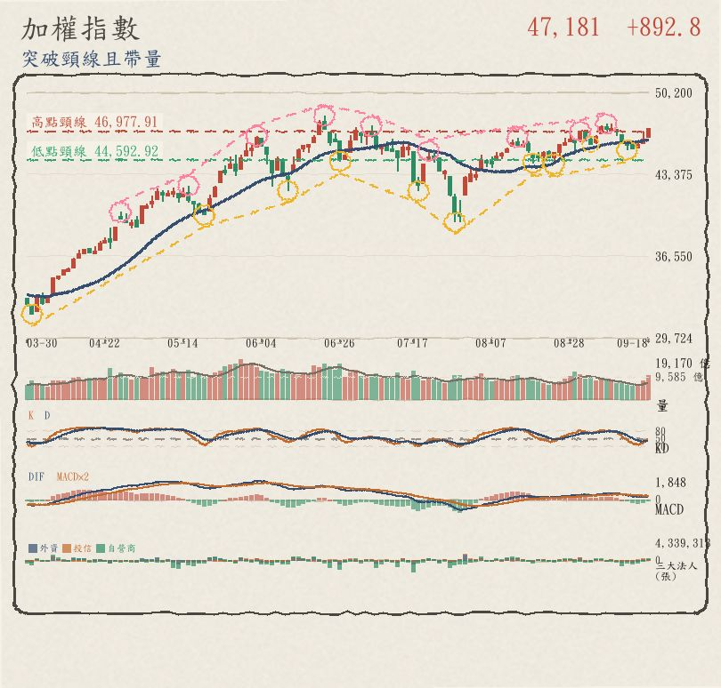
圖說：加權指數日 K（與個股圖相同標記）：黃圈＝轉折低點、粉圈＝轉折高點、虛線小圈＝還沒確認的轉折、藍線＝月線 MA20、水平虛線＝高點／低點頸線。最後一根是資料日當天。
本區塊為公開資料的技術面觀察，不構成投資建議，
不報牌、不預測、不下買賣決策。成交金額為集中市場總成交金額（含 ETF／權證），
與頁首摘要的「上市個股成交金額」口徑不同。標籤是統計，不是評分、也不是推薦。
上市 vs 上櫃（同期快篩）
加權 -0.03% vs 櫃買 -0.09%（同向） → 同向
（兩個市場分開寫，不合併成一個數字；櫃買為 TPEX 公開資料）
櫃買歷史：TPEX 逐日回補 130 根；來源：櫃買中心 www/zh-tw/indexInfo/sectinx（逐日，官方；OpenAPI tpex_index 只回當月）
（TPEX OpenAPI 只回當月，故逐日回補；歷史不足就不算該條均線並標「資料不足」，不用錯數字）
近 20 個交易日大盤狀態回溯（最新在上）（點開看逐日主狀態／量比／量價象限）
用同一支程式回算最近 20 個交易日（主狀態 S1~S8 與量比 20 皆為當日收盤當時的判定，
不是事後調整）；量比 20 未公布的日子寫「—」。
好條件最多的（前 10）
不好條件最多的（前 10）
好條件（8 項）：站上月線、月線向上、底底高、頭頭高、突破頸線、相對大盤強、外資買超、量價攻擊（收紅＋大量）。
不好條件（8 項）：跌破前低、今日下跌、相對大盤弱、在月線之下、量增下跌（出貨）、外資賣超、月線下彎、收盤跌破前一日低點。
兩邊都是同一組資料（日線結構＋當日收盤量價籌碼）算出來的「符合項目數」，只是方向相反；
條件數不是評分、也不是推薦，不構成投資建議。
上升趨勢：底底高 ＋ 頭頭高（19 上市 13／上櫃 6）
量價攻擊（收紅＋大量）（26 上市 17／上櫃 9）
逐檔分析（70 檔）
剛突破前高 成交金額 612.33 億・全榜第 1 名（上市第 1 名）
好條件 6/8：站上月線、月線向上、頭頭高、相對大盤強、外資買超、量價攻擊（收紅＋大量）
不好條件 0/8：無
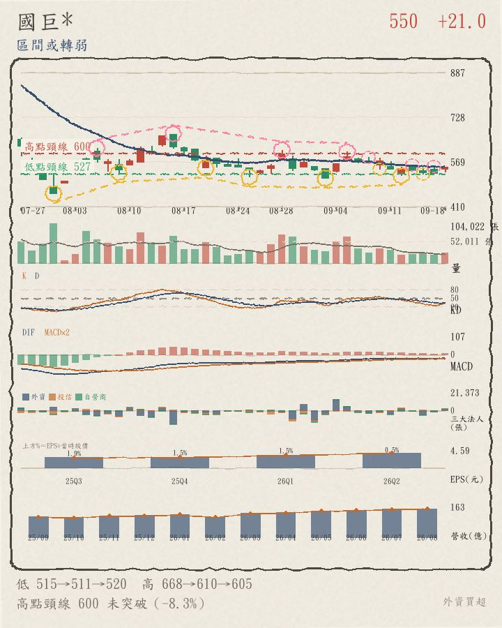
今天帶量收紅、站上月線 572.4，離高點頸線 670.67 還差 3.5%，高點還在墊高（但底部沒同步墊高）。
- 月線位置：收盤 647 在月線 572.4 之上；5 日線 625.2 也在月線之上（短均在上）；月線向上、5 日線向上
- 量能：成交量是 20 日均量的 2.36 倍，比 20 日均量大不少；收紅又量增，量價配合
- 關鍵價位：高點頸線 670.67 還沒突破，差 3.5%；最近轉折高點 601（高於 7.7%）；最近轉折低點 548（高於 18.1%）
- 轉折結構：高點 610、605、601 墊高 14.1%（頭頭高），但低點 520、548、548 沒有同步墊高；還沒確認的轉折低點 10-06 615；還沒確認的轉折高點 10-05 658、10-07 686（圖上虛線小圈）
剛突破前高 成交金額 436.44 億・全榜第 2 名（上市第 2 名）
好條件 5/8：站上月線、月線向上、頭頭高、突破頸線、相對大盤強
不好條件 1/8：外資賣超
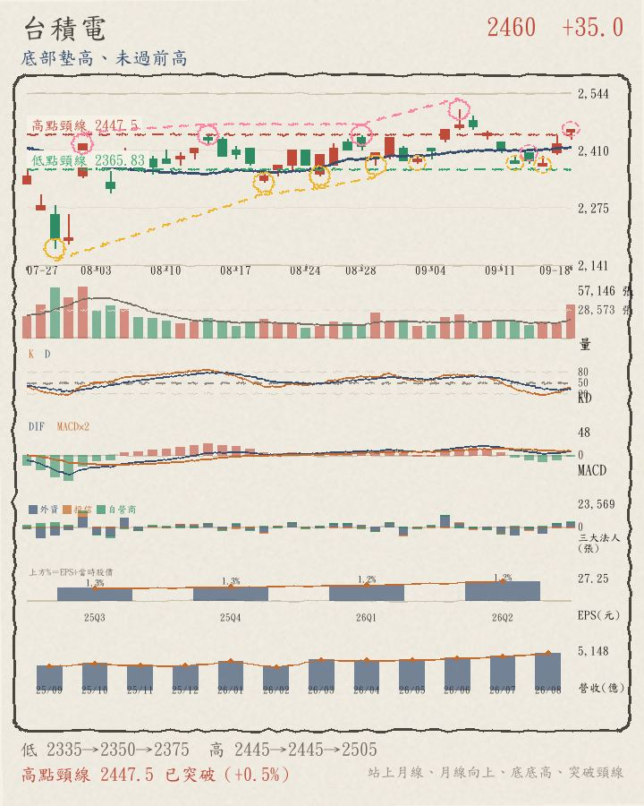
今天收黑、成交量也比平均少、站上月線 2472.5，已站上高點頸線 2483，高點還在墊高（但底部沒同步墊高）。
- 月線位置：收盤 2585 在月線 2472.5 之上；5 日線 2551 也在月線之上（短均在上）；月線向上、5 日線向上
- 量能：成交量是 20 日均量的 0.78 倍，比 20 日均量少很多
- 關鍵價位：高點頸線 2483 已站上；最近轉折高點 2510（高於 3.0%）；最近轉折低點 2375（高於 8.8%）
- 轉折結構：高點 2445、2505、2510 墊高 3.2%（頭頭高），但低點 2350、2375、2375 沒有同步墊高；還沒確認的轉折低點 09-24 2470、10-07 2560；還沒確認的轉折高點 09-30 2510、10-06 2590（圖上虛線小圈）
剛突破前高 成交金額 375.54 億・全榜第 3 名（上市第 3 名）
好條件 7/8：站上月線、月線向上、頭頭高、突破頸線、相對大盤強、外資買超、量價攻擊（收紅＋大量）
不好條件 0/8：無
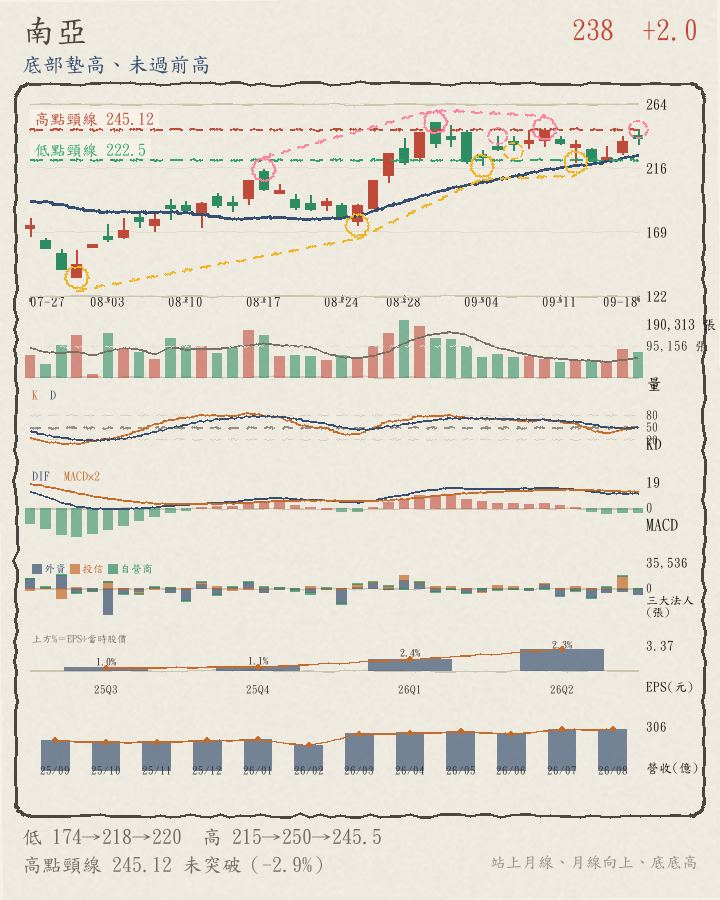
今天帶量收紅、站上月線 247.475，已站上高點頸線 248，高點還在墊高（但底部沒同步墊高）。
- 月線位置：收盤 314 在月線 247.475 之上；5 日線 281.4 也在月線之上（短均在上）；月線向上、5 日線向上
- 量能：成交量是 20 日均量的 1.74 倍，比 20 日均量大不少；收紅又量增，量價配合
- 關鍵價位：高點頸線 248 已站上；最近轉折高點 251.5（高於 24.9%）；最近轉折低點 223（高於 40.8%）
- 轉折結構：高點 250、245.5、251.5 墊高 28.0%（頭頭高），但低點 220.5、223、223 沒有同步墊高；還沒確認的轉折高點 09-30 265、10-07 322（圖上虛線小圈）
上升趨勢（底底高＋頭頭高） 成交金額 375.08 億・全榜第 4 名（上市第 4 名）
好條件 3/8：月線向上、底底高、頭頭高
不好條件 7/8：跌破前低、今日下跌、相對大盤弱、在月線之下、量增下跌（出貨）、外資賣超、收盤跌破前一日低點
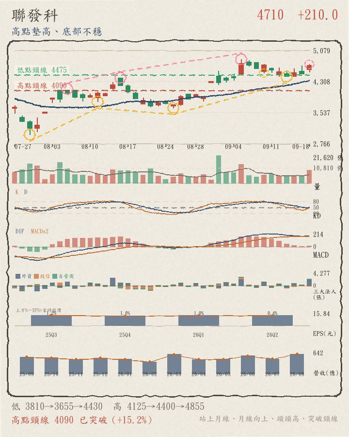
今天收黑、跌破月線 4835.5，跌破前一個轉折低點（高點頸線 5420 還在收盤上方），轉折結構仍是底底高＋頭頭高。
- 月線位置：收盤 4835 在月線 4835.5 之下；5 日線 4970 也在月線之上（短均在上）；月線向上、5 日線走平或向下
- 量能：成交量是 20 日均量的 1.04 倍，跟 20 日均量差不多
- 關鍵價位：高點頸線 5420 還沒突破、還在收盤上方 10.8%；最近轉折高點 5480（低於 11.8%）；最近轉折低點 4875（低於 0.8%）
- 轉折結構：低點 3655、4430、4875 一路墊高 33.4%、高點 4400、4855、5480 也一路墊高 24.5%，是底底高＋頭頭高；還沒確認的轉折低點 09-29 4890、10-07 4835；還沒確認的轉折高點 09-24 5360、10-05 5165（圖上虛線小圈）
底部墊高、突破前高 成交金額 225.59 億・全榜第 5 名（上市第 5 名）
好條件 8/8：站上月線、月線向上、底底高、頭頭高、突破頸線、相對大盤強、外資買超、量價攻擊（收紅＋大量）
不好條件 0/8：無
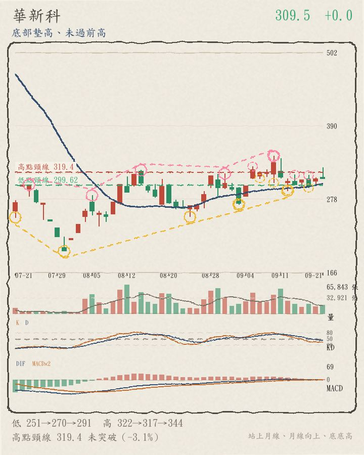
今天帶量收紅、站上月線 325.9，已站上高點頸線 321.33，轉折結構仍是底底高＋頭頭高。
- 月線位置：收盤 428 在月線 325.9 之上；5 日線 375.3 也在月線之上（短均在上）；月線向上、5 日線向上
- 量能：成交量是 20 日均量的 1.58 倍，比 20 日均量大不少；收紅又量增，量價配合
- 關鍵價位：高點頸線 321.33 已站上；最近轉折高點 326（高於 31.3%）；最近轉折低點 298.5（高於 43.4%）
- 轉折結構：低點 270、291、298.5 一路墊高 10.6%、高點 317、344、326 也一路墊高 31.3%，是底底高＋頭頭高；還沒確認的轉折低點 10-06 362.5；還沒確認的轉折高點 10-05 396、10-07 428（圖上虛線小圈）
上升趨勢（底底高＋頭頭高） 成交金額 219.74 億・全榜第 6 名（上市第 6 名）
好條件 5/8：月線向上、底底高、頭頭高、突破頸線、相對大盤強
不好條件 3/8：跌破前低、在月線之下、外資賣超
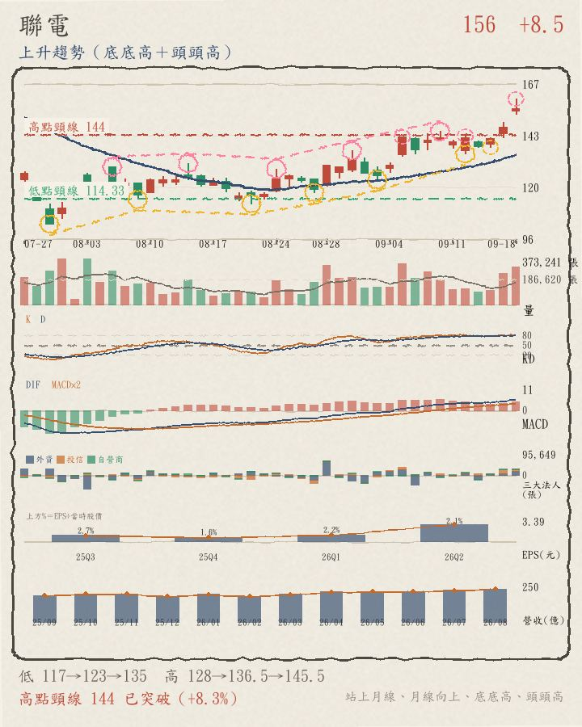
今天收紅、但成交量比平均少、跌破月線 149.925，已站上高點頸線 147.75，轉折結構仍是底底高＋頭頭高。
- 月線位置：收盤 148.5 在月線 149.925 之下；5 日線 154.3 也在月線之上（短均在上）；月線向上、5 日線走平或向下
- 量能：成交量是 20 日均量的 0.78 倍，比 20 日均量少很多；收紅但量縮，量價背離
- 關鍵價位：高點頸線 147.75 已站上；最近轉折高點 168.5（低於 11.9%）；最近轉折低點 151.5（低於 2.0%）
- 轉折結構：低點 123、135、151.5 一路墊高 23.2%、高點 136.5、145.5、168.5 也一路墊高 23.4%，是底底高＋頭頭高；還沒確認的轉折低點 09-21 153、10-07 145.5；還沒確認的轉折高點 10-05 165、10-07 150（圖上虛線小圈）
高點墊高、底部不穩 成交金額 216.87 億・全榜第 7 名（上市第 7 名）
好條件 4/8：站上月線、月線向上、頭頭高、突破頸線
不好條件 4/8：今日下跌、相對大盤弱、外資賣超、收盤跌破前一日低點
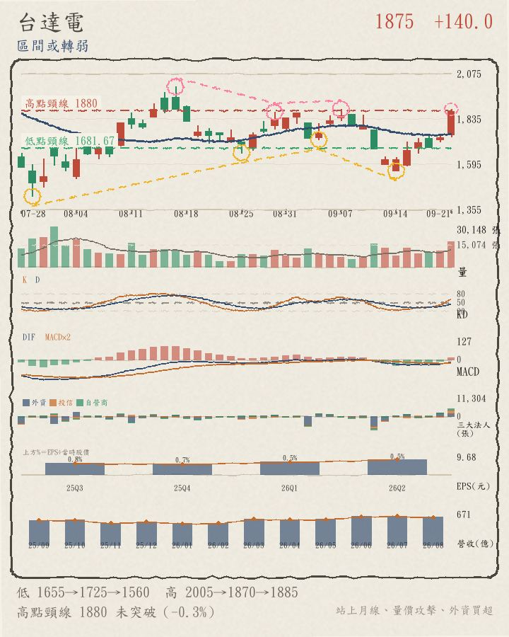
今天收黑、成交量也比平均少、站上月線 1823，已站上高點頸線 1910，高點還在墊高（但底部沒同步墊高）。
- 月線位置：收盤 1990 在月線 1823 之上；5 日線 1967 也在月線之上（短均在上）；月線向上、5 日線向上
- 量能：成交量是 20 日均量的 0.92 倍，比 20 日均量少一些
- 關鍵價位：高點頸線 1910 已站上；最近轉折高點 1965（高於 1.3%）；最近轉折低點 1810（高於 9.9%）
- 轉折結構：高點 1870、1885、1965 墊高 5.1%（頭頭高），但低點 1725、1560、1810 沒有同步墊高；還沒確認的轉折低點 10-01 1860、10-07 1975；還沒確認的轉折高點 10-01 1935、10-06 2115（圖上虛線小圈）
底部墊高、突破前高 成交金額 208.61 億・全榜第 8 名（上市第 8 名）
好條件 8/8：站上月線、月線向上、底底高、頭頭高、突破頸線、相對大盤強、外資買超、量價攻擊（收紅＋大量）
不好條件 0/8：無
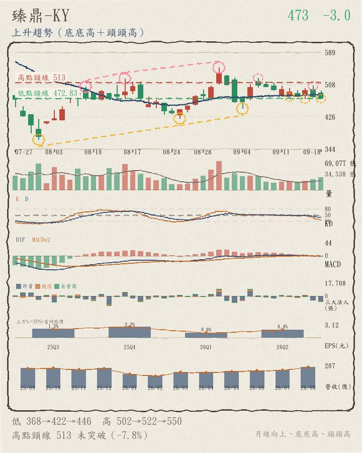
今天帶量收紅、站上月線 506.75，已站上高點頸線 509.67，轉折結構仍是底底高＋頭頭高。
- 月線位置：收盤 595 在月線 506.75 之上；5 日線 563.2 也在月線之上（短均在上）；月線向上、5 日線向上
- 量能：成交量是 20 日均量的 1.14 倍，比 20 日均量大一些；收紅又量增，量價配合
- 關鍵價位：高點頸線 509.67 已站上；最近轉折高點 505（高於 17.8%）；最近轉折低點 463.5（高於 28.4%）
- 轉折結構：低點 421.5、446.5、463.5 一路墊高 10.0%、高點 522、550、505 也一路墊高 19.6%，是底底高＋頭頭高；還沒確認的轉折低點 09-23 470；還沒確認的轉折高點 10-06 604（圖上虛線小圈）
剛突破前高 成交金額 198.8 億・全榜第 10 名（上市第 9 名）
好條件 3/8：站上月線、月線向上、頭頭高
不好條件 4/8：今日下跌、相對大盤弱、外資賣超、收盤跌破前一日低點
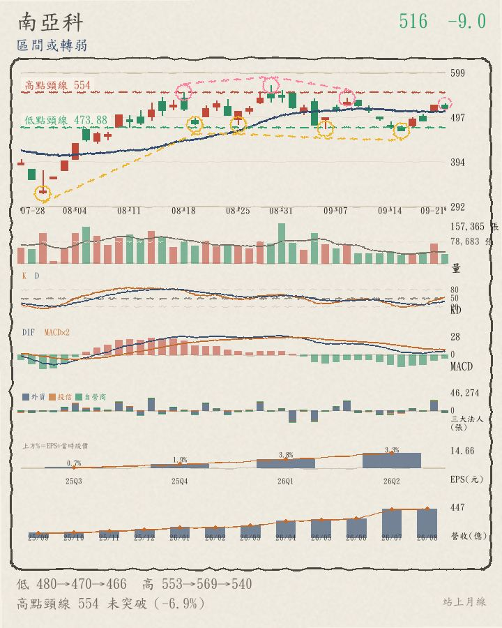
今天收黑、成交量也比平均少、站上月線 508.8，離高點頸線 544 還差 5.5%，高點還在墊高（但底部沒同步墊高）。
- 月線位置：收盤 514 在月線 508.8 之上；5 日線 522.8 也在月線之上（短均在上）；月線向上、5 日線向上
- 量能：成交量是 20 日均量的 0.89 倍，比 20 日均量少一些
- 關鍵價位：高點頸線 544 還沒突破，差 5.5%；最近轉折高點 533（低於 3.6%）；最近轉折低點 488（高於 5.3%）
- 轉折結構：高點 569、540、533 墊高 0.4%（頭頭高），但低點 470、465.5、488 沒有同步墊高；還沒確認的轉折低點 10-05 512、10-07 514；還沒確認的轉折高點 10-02 534、10-06 535（圖上虛線小圈）
剛突破前高 成交金額 181.88 億・全榜第 11 名（上市第 10 名）
好條件 4/8：站上月線、月線向上、頭頭高、外資買超
不好條件 3/8：今日下跌、相對大盤弱、量增下跌（出貨）
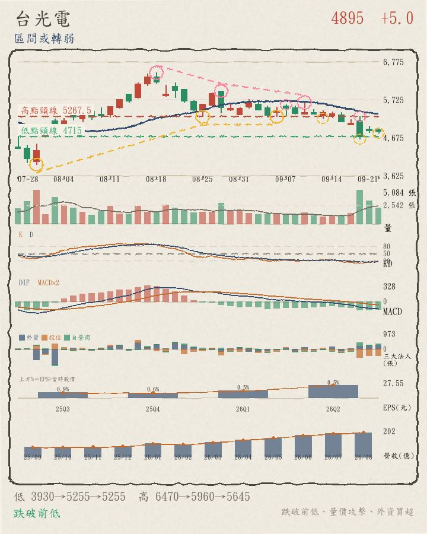
今天帶量收黑、站上月線 5203.5，離高點頸線 6397.5 還差 7.0%，高點還在墊高（但底部沒同步墊高）。
- 月線位置：收盤 5950 在月線 5203.5 之上；5 日線 5561 也在月線之上（短均在上）；月線向上、5 日線向上
- 量能：成交量是 20 日均量的 1.49 倍，比 20 日均量大不少；收黑卻量增，量價背離
- 關鍵價位：高點頸線 6397.5 還沒突破，差 7.0%；最近轉折高點 5170（高於 15.1%）；最近轉折低點 4855（高於 22.6%）
- 轉折結構：高點 5960、5645、5170 墊高 22.3%（頭頭高），但低點 5255、4635、4855 沒有同步墊高；還沒確認的轉折低點 09-21 4795、09-29 4870；還沒確認的轉折高點 10-07 6325（圖上虛線小圈）
底部墊高、突破前高 成交金額 153.17 億・全榜第 15 名（上市第 11 名）
好條件 3/8：站上月線、底底高、頭頭高
不好條件 5/8：今日下跌、相對大盤弱、量增下跌（出貨）、外資賣超、月線下彎

今天帶量收黑、站上月線 227.875，離高點頸線 259.67 還差 5.3%，轉折結構仍是底底高＋頭頭高。
- 月線位置：收盤 246 在月線 227.875 之上；5 日線 239.4 也在月線之上（短均在上）；月線走平或向下、5 日線向上
- 量能：成交量是 20 日均量的 2.56 倍，比 20 日均量大不少；收黑卻量增，量價背離
- 關鍵價位：高點頸線 259.67 還沒突破，差 5.3%；最近轉折高點 235（高於 4.7%）；最近轉折低點 219（高於 12.3%）
- 轉折結構：低點 205.5、213、219 一路墊高 6.6%、高點 260、258、235 也一路墊高 11.1%，是底底高＋頭頭高；還沒確認的轉折低點 09-21 219、10-01 223；還沒確認的轉折高點 09-30 229.5、10-07 261（圖上虛線小圈）
剛突破前高 成交金額 148.96 億・全榜第 16 名（上市第 12 名）
好條件 5/8：站上月線、頭頭高、相對大盤強、外資買超、量價攻擊（收紅＋大量）
不好條件 1/8：月線下彎
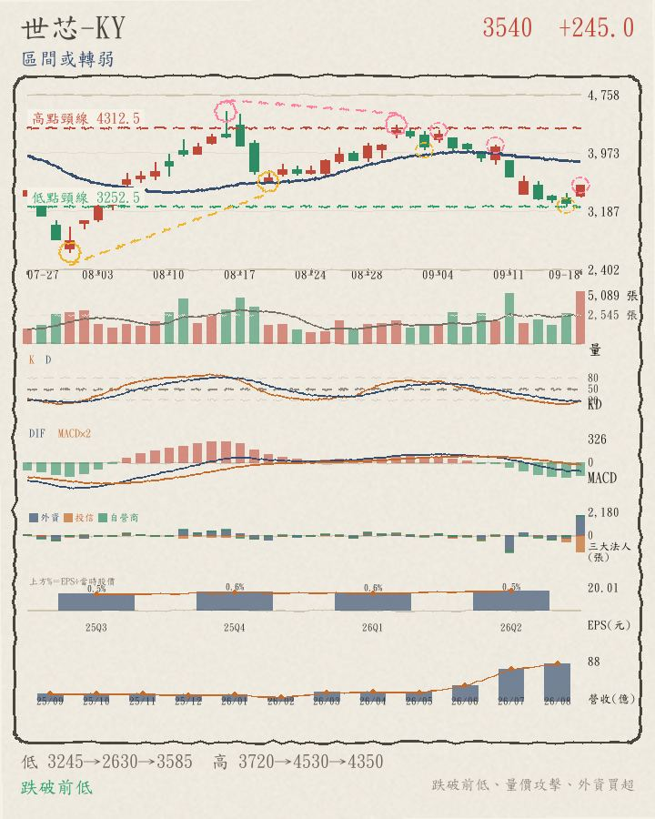
今天帶量收紅、站上月線 3749.75，離高點頸線 4391.67 還差 4.6%，高點還在墊高（但底部沒同步墊高）。
- 月線位置：收盤 4190 在月線 3749.75 之上；5 日線 3979 也在月線之上（短均在上）；月線走平或向下、5 日線向上
- 量能：成交量是 20 日均量的 1.53 倍，比 20 日均量大不少；收紅又量增，量價配合
- 關鍵價位：高點頸線 4391.67 還沒突破，差 4.6%；最近轉折高點 3950（高於 6.1%）；最近轉折低點 3260（高於 28.5%）
- 轉折結構：高點 4530、4350、3950 墊高 8.7%（頭頭高），但低點 2630、3585、3260 沒有同步墊高；還沒確認的轉折低點 09-29 3675、10-06 3850；還沒確認的轉折高點 10-07 4295（圖上虛線小圈）
剛突破前高 成交金額 147.58 億・全榜第 17 名（上市第 13 名）
好條件 2/8：站上月線、頭頭高
不好條件 5/8：今日下跌、相對大盤弱、量增下跌（出貨）、外資賣超、月線下彎
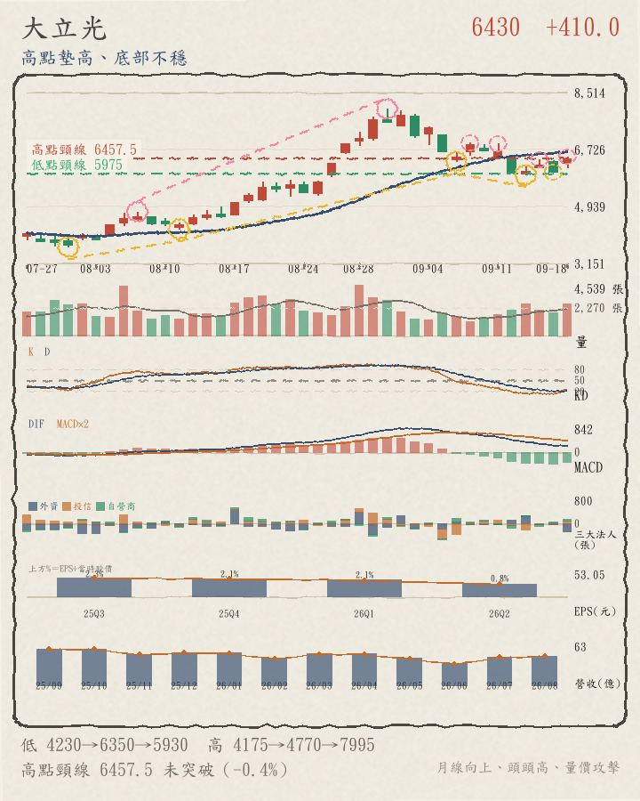
今天帶量收黑、站上月線 6380.25，離高點頸線 6860 還差 0.2%，高點還在墊高（但底部沒同步墊高）。
- 月線位置：收盤 6845 在月線 6380.25 之上；5 日線 6585 也在月線之上（短均在上）；月線走平或向下、5 日線向上
- 量能：成交量是 20 日均量的 1.13 倍，比 20 日均量大一些；收黑卻量增，量價背離
- 關鍵價位：高點頸線 6860 還沒突破，差 0.2%；最近轉折高點 6750（高於 1.4%）；最近轉折低點 5740（高於 19.3%）
- 轉折結構：高點 4770、7995、6750 墊高 3.3%（頭頭高），但低點 6350、5930、5740 沒有同步墊高；還沒確認的轉折低點 09-29 5940；還沒確認的轉折高點 10-07 6970（圖上虛線小圈）
剛突破前高 成交金額 147.57 億・全榜第 18 名（上市第 14 名）
好條件 4/8：站上月線、月線向上、頭頭高、突破頸線
不好條件 4/8：今日下跌、相對大盤弱、量增下跌（出貨）、外資賣超
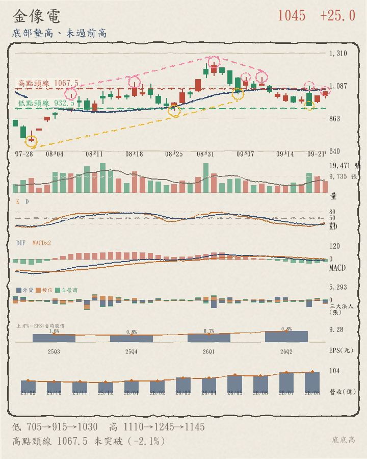
今天帶量收黑、站上月線 1084.7，已站上高點頸線 1151.67，高點還在墊高（但底部沒同步墊高）。
- 月線位置：收盤 1245 在月線 1084.7 之上；5 日線 1184 也在月線之上（短均在上）；月線向上、5 日線向上
- 量能：成交量是 20 日均量的 1.28 倍，比 20 日均量大不少；收黑卻量增，量價背離
- 關鍵價位：高點頸線 1151.67 已站上；最近轉折高點 1085（高於 14.7%）；最近轉折低點 950（高於 31.1%）
- 轉折結構：高點 1245、1145、1085 墊高 20.7%（頭頭高），但低點 915、1030、950 沒有同步墊高；還沒確認的轉折低點 09-30 1070、10-02 1085；還沒確認的轉折高點 09-30 1160、10-07 1310（圖上虛線小圈）
剛突破前高 成交金額 147.05 億・全榜第 19 名（上市第 15 名）
好條件 5/8：站上月線、月線向上、頭頭高、相對大盤強、外資買超
不好條件 0/8：無
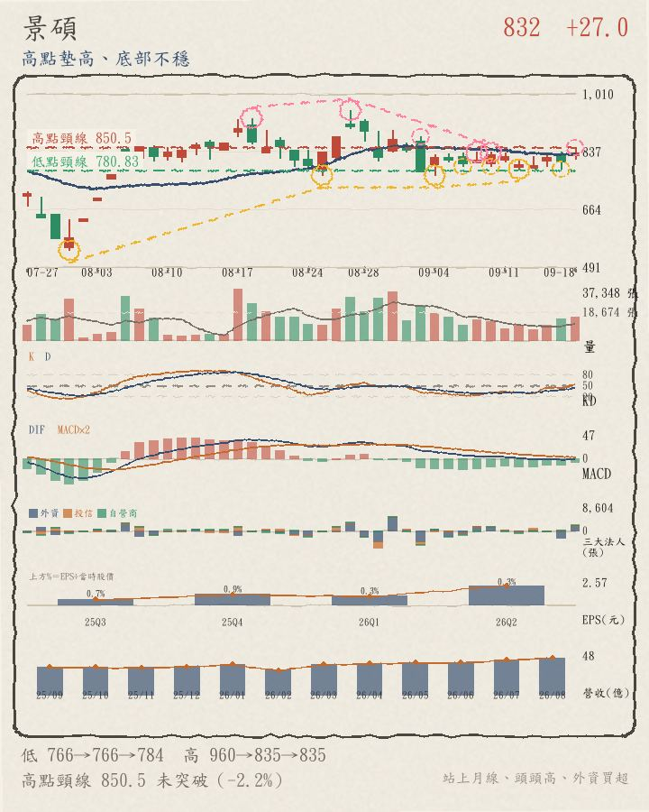
今天收紅、但成交量比平均少、站上月線 908.25，離高點頸線 1147.5 還差 4.1%，高點還在墊高（但底部沒同步墊高）。
- 月線位置：收盤 1100 在月線 908.25 之上；5 日線 1065 也在月線之上（短均在上）；月線向上、5 日線向上
- 量能：成交量是 20 日均量的 0.72 倍，比 20 日均量少很多；收紅但量縮，量價背離
- 關鍵價位：高點頸線 1147.5 還沒突破，差 4.1%；最近轉折高點 835（高於 31.7%）；最近轉折低點 784（高於 40.3%）
- 轉折結構：高點 960、835、835 墊高 37.7%（頭頭高），但低點 766、766、784 沒有同步墊高；還沒確認的轉折低點 09-30 937；還沒確認的轉折高點 10-05 1150、10-07 1145（圖上虛線小圈）
上升趨勢（底底高＋頭頭高） 成交金額 134.97 億・全榜第 21 名（上市第 16 名）
好條件 6/8：站上月線、月線向上、底底高、頭頭高、相對大盤強、量價攻擊（收紅＋大量）
不好條件 1/8：外資賣超
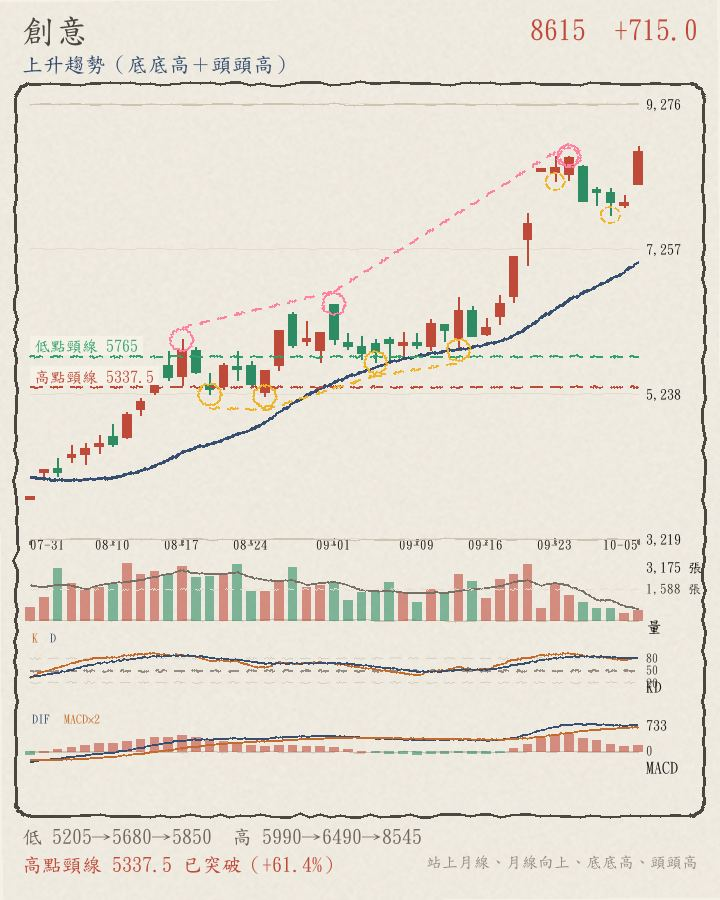
今天收紅、站上月線 7329.25，離高點頸線 8647.5 還差 2.2%，轉折結構仍是底底高＋頭頭高。
- 月線位置：收盤 8460 在月線 7329.25 之上；5 日線 8247 也在月線之上（短均在上）；月線向上、5 日線走平或向下
- 量能：成交量是 20 日均量的 1.03 倍，跟 20 日均量差不多
- 關鍵價位：高點頸線 8647.5 還沒突破，差 2.2%；最近轉折高點 8545（低於 1.0%）；最近轉折低點 7730（高於 9.4%）
- 轉折結構：低點 5680、5850、7730 一路墊高 36.1%、高點 5990、6490、8545 也一路墊高 42.7%，是底底高＋頭頭高；還沒確認的轉折低點 09-23 8200、10-06 8110；還沒確認的轉折高點 10-07 8750（圖上虛線小圈）
底部墊高、突破前高 成交金額 134.31 億・全榜第 22 名（上市第 17 名）
好條件 5/8：站上月線、月線向上、底底高、頭頭高、外資買超
不好條件 3/8：今日下跌、相對大盤弱、收盤跌破前一日低點
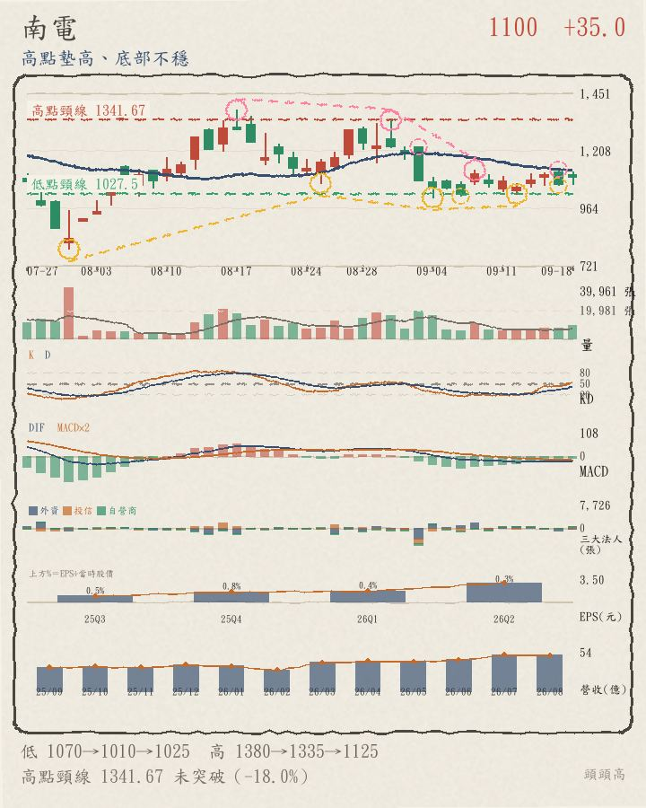
今天收黑、成交量也比平均少、站上月線 1217，離高點頸線 1555 還差 4.8%，轉折結構仍是底底高＋頭頭高。
- 月線位置：收盤 1480 在月線 1217 之上；5 日線 1472 也在月線之上（短均在上）；月線向上、5 日線向上
- 量能：成交量是 20 日均量的 0.82 倍，比 20 日均量少很多
- 關鍵價位：高點頸線 1555 還沒突破，差 4.8%；最近轉折高點 1125（高於 31.6%）；最近轉折低點 1050（高於 41.0%）
- 轉折結構：低點 1010、1025、1050 一路墊高 4.0%、高點 1380、1335、1125 也一路墊高 38.7%，是底底高＋頭頭高；還沒確認的轉折低點 10-07 1470；還沒確認的轉折高點 10-05 1550、10-07 1560（圖上虛線小圈）
剛突破前高 成交金額 134 億・全榜第 23 名（上市第 18 名）
好條件 4/8：站上月線、月線向上、頭頭高、突破頸線
不好條件 4/8：今日下跌、相對大盤弱、量增下跌（出貨）、外資賣超
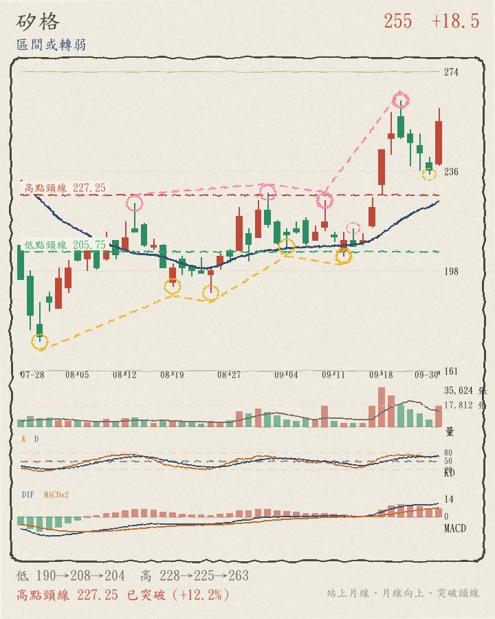
今天帶量收黑、站上月線 238.15，已站上高點頸線 261.5，高點還在墊高（但底部沒同步墊高）。
- 月線位置：收盤 278 在月線 238.15 之上；5 日線 267.6 也在月線之上（短均在上）；月線向上、5 日線向上
- 量能：成交量是 20 日均量的 3.33 倍，比 20 日均量大不少；收黑卻量增，量價背離
- 關鍵價位：高點頸線 261.5 已站上；最近轉折高點 263（高於 5.7%）；最近轉折低點 235（高於 18.3%）
- 轉折結構：高點 228、225、263 墊高 11.6%（頭頭高），但低點 207.5、204、235 沒有同步墊高；還沒確認的轉折高點 09-30 260、10-07 293.5（圖上虛線小圈）
高點墊高、底部不穩 成交金額 131.56 億・全榜第 25 名（上市第 19 名）
好條件 5/8：站上月線、月線向上、頭頭高、突破頸線、相對大盤強
不好條件 1/8：外資賣超
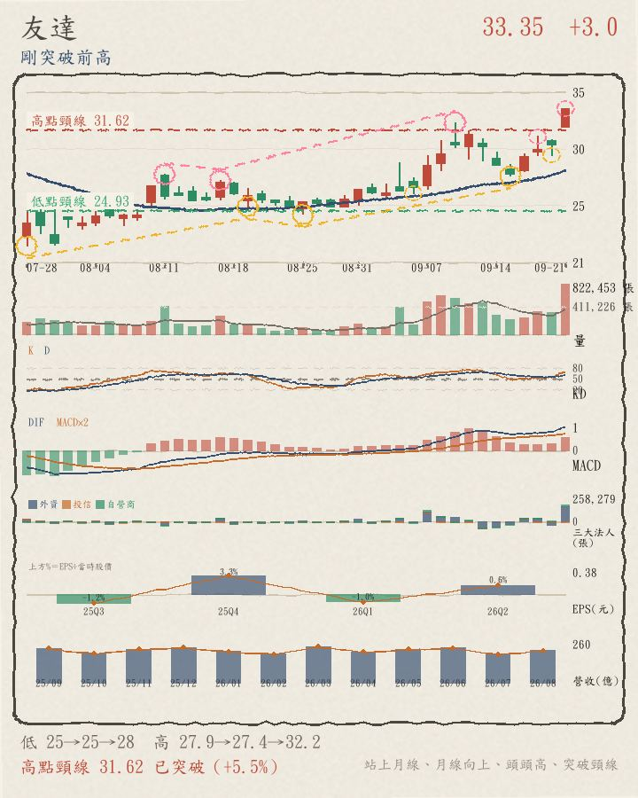
今天收紅、但成交量比平均少、站上月線 33.678，已站上高點頸線 36.65，高點還在墊高（但底部沒同步墊高）。
- 月線位置：收盤 37.95 在月線 33.678 之上；5 日線 38.64 也在月線之上（短均在上）；月線向上、5 日線向上
- 量能：成交量是 20 日均量的 0.59 倍，比 20 日均量少很多；收紅但量縮，量價背離
- 關鍵價位：高點頸線 36.65 已站上；最近轉折高點 36.65（高於 3.5%）；最近轉折低點 27.75（高於 36.8%）
- 轉折結構：高點 27.4、32.2、36.65 墊高 33.8%（頭頭高），但低點 25.25、24.6、27.75 沒有同步墊高；還沒確認的轉折低點 09-23 33.4、10-07 37；還沒確認的轉折高點 09-23 36.65、10-05 43.55（圖上虛線小圈）
上升趨勢（底底高＋頭頭高） 成交金額 131.48 億・全榜第 26 名（上市第 20 名）
好條件 7/8：站上月線、月線向上、底底高、頭頭高、相對大盤強、外資買超、量價攻擊（收紅＋大量）
不好條件 0/8：無
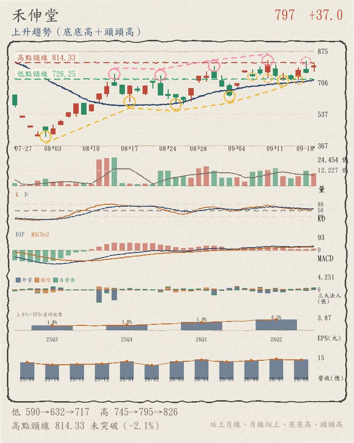
今天帶量收紅、站上月線 785.65，離高點頸線 869.67 還差 3.5%，轉折結構仍是底底高＋頭頭高。
- 月線位置：收盤 839 在月線 785.65 之上；5 日線 827.8 也在月線之上（短均在上）；月線向上、5 日線向上
- 量能：成交量是 20 日均量的 1.54 倍，比 20 日均量大不少；收紅又量增，量價配合
- 關鍵價位：高點頸線 869.67 還沒突破，差 3.5%；最近轉折高點 881（低於 4.8%）；最近轉折低點 760（高於 10.4%）
- 轉折結構：低點 632、717、760 一路墊高 20.3%、高點 826、856、881 也一路墊高 6.7%，是底底高＋頭頭高；還沒確認的轉折低點 10-06 796；還沒確認的轉折高點 09-24 820、10-07 872（圖上虛線小圈）
高點墊高、底部不穩 成交金額 128.79 億・全榜第 27 名（上市第 21 名）
好條件 6/8：站上月線、月線向上、頭頭高、相對大盤強、外資買超、量價攻擊（收紅＋大量）
不好條件 0/8：無

今天帶量收紅、站上月線 2236.25，離高點頸線 2497.5 還差 3.9%，高點還在墊高（但底部沒同步墊高）。
- 月線位置：收盤 2400 在月線 2236.25 之上；5 日線 2269 也在月線之上（短均在上）；月線向上、5 日線走平或向下
- 量能：成交量是 20 日均量的 2.13 倍，比 20 日均量大不少；收紅又量增，量價配合
- 關鍵價位：高點頸線 2497.5 還沒突破，差 3.9%；最近轉折高點 2540（低於 5.5%）；最近轉折低點 2025（高於 18.5%）
- 轉折結構：高點 2400、2490、2540 墊高 5.8%（頭頭高），但低點 1875、2070、2025 沒有同步墊高；還沒確認的轉折高點 10-07 2560（圖上虛線小圈）
剛突破前高 成交金額 126.94 億・全榜第 28 名（上市第 22 名）
好條件 5/8：站上月線、月線向上、頭頭高、突破頸線、相對大盤強
不好條件 1/8：外資賣超

今天收紅、但成交量比平均少、站上月線 588.4，已站上高點頸線 564.5，高點還在墊高（但底部沒同步墊高）。
- 月線位置：收盤 796 在月線 588.4 之上；5 日線 731.8 也在月線之上（短均在上）；月線向上、5 日線向上
- 量能：成交量是 20 日均量的 0.85 倍，比 20 日均量少一些；收紅但量縮，量價背離
- 關鍵價位：高點頸線 564.5 已站上；最近轉折高點 555（高於 43.4%）；最近轉折低點 482（高於 65.1%）
- 轉折結構：高點 387.5、599、555 墊高 47.4%（頭頭高），但低點 237、493.5、482 沒有同步墊高；還沒確認的轉折低點 09-29 588、10-01 611；還沒確認的轉折高點 09-30 649、10-06 818（圖上虛線小圈）
剛突破前高 成交金額 124.7 億・全榜第 29 名（上市第 23 名）
好條件 3/8：站上月線、月線向上、頭頭高
不好條件 4/8：今日下跌、相對大盤弱、量增下跌（出貨）、外資賣超
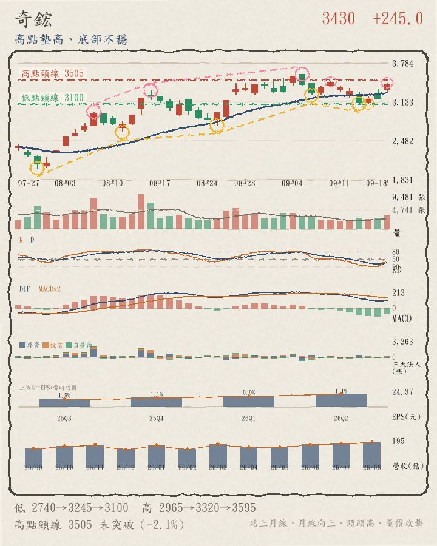
今天帶量收黑、站上月線 3407，離高點頸線 3617.5 還差 2.0%，高點還在墊高（但底部沒同步墊高）。
- 月線位置：收盤 3545 在月線 3407 之上；5 日線 3553 也在月線之上（短均在上）；月線向上、5 日線向上
- 量能：成交量是 20 日均量的 1.09 倍，比 20 日均量大一些；收黑卻量增，量價背離
- 關鍵價位：高點頸線 3617.5 還沒突破，差 2.0%；最近轉折高點 3600（低於 1.5%）；最近轉折低點 3285（高於 7.9%）
- 轉折結構：高點 3320、3595、3600 墊高 2.8%（頭頭高），但低點 3100、3100、3285 沒有同步墊高；還沒確認的轉折低點 10-01 3300、10-07 3505；還沒確認的轉折高點 09-30 3575、10-06 3700（圖上虛線小圈）
高點墊高、底部不穩 成交金額 124.1 億・全榜第 30 名（上市第 24 名）
好條件 1/8：頭頭高
不好條件 8/8：跌破前低、今日下跌、相對大盤弱、在月線之下、量增下跌（出貨）、外資賣超、月線下彎、收盤跌破前一日低點
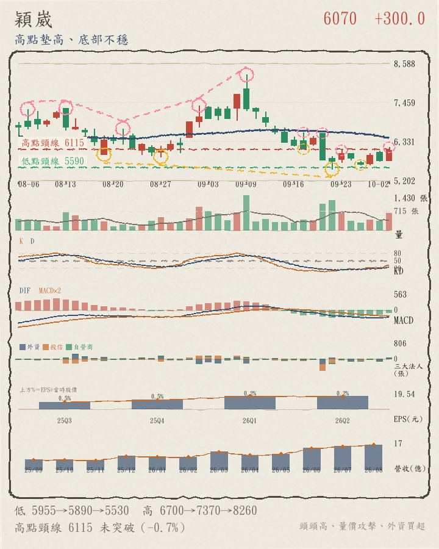
今天帶量收黑、跌破月線 6272.25，跌破前一個轉折低點（高點頸線 6177.5 還在收盤上方），高點還在墊高（但底部沒同步墊高）。
- 月線位置：收盤 5520 在月線 6272.25 之下；5 日線 5939 也在月線之下（短均在下）；月線走平或向下、5 日線向上
- 量能：成交量是 20 日均量的 4.02 倍，比 20 日均量大不少；收黑卻量增，量價背離
- 關鍵價位：高點頸線 6177.5 還沒突破、還在收盤上方 10.6%；最近轉折高點 8260（低於 33.2%）；最近轉折低點 5530（低於 0.2%）
- 轉折結構：高點 6700、7370、8260 墊高 23.3%（頭頭高），但低點 5955、5890、5530 沒有同步墊高；還沒確認的轉折低點 09-29 5650、10-07 5520；還沒確認的轉折高點 09-23 6070、10-06 6285（圖上虛線小圈）
剛突破前高 成交金額 120.97 億・全榜第 31 名（上市第 25 名）
好條件 5/8：站上月線、月線向上、頭頭高、突破頸線、外資買超
不好條件 2/8：今日下跌、相對大盤弱
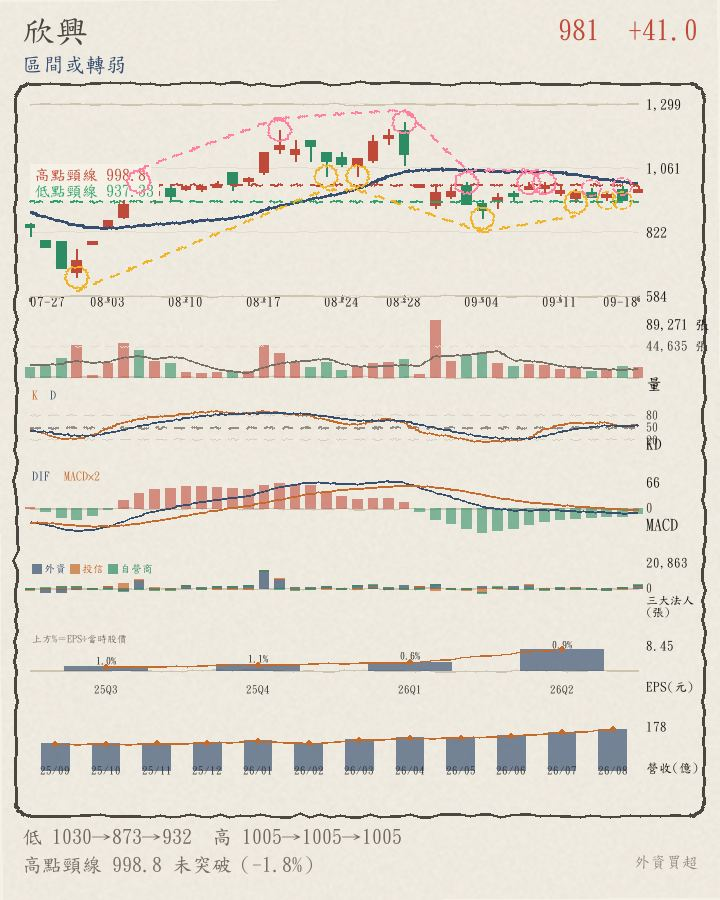
今天收黑、成交量也比平均少、站上月線 1100.3，已站上高點頸線 1005，高點還在墊高（但底部沒同步墊高）。
- 月線位置：收盤 1305 在月線 1100.3 之上；5 日線 1292 也在月線之上（短均在上）；月線向上、5 日線向上
- 量能：成交量是 20 日均量的 0.60 倍，比 20 日均量少很多
- 關鍵價位：高點頸線 1005 已站上；最近轉折高點 1200（高於 8.7%）；最近轉折低點 932（高於 40.0%）
- 轉折結構：高點 1005、1005、1200 墊高 18.3%（頭頭高），但低點 1030、873、932 沒有同步墊高；還沒確認的轉折低點 09-29 1130、10-06 1285；還沒確認的轉折高點 10-05 1420、10-07 1345（圖上虛線小圈）
區間或轉弱 成交金額 113.18 億・全榜第 32 名（上市第 26 名）
好條件 4/8：站上月線、月線向上、相對大盤強、外資買超
不好條件 0/8：無
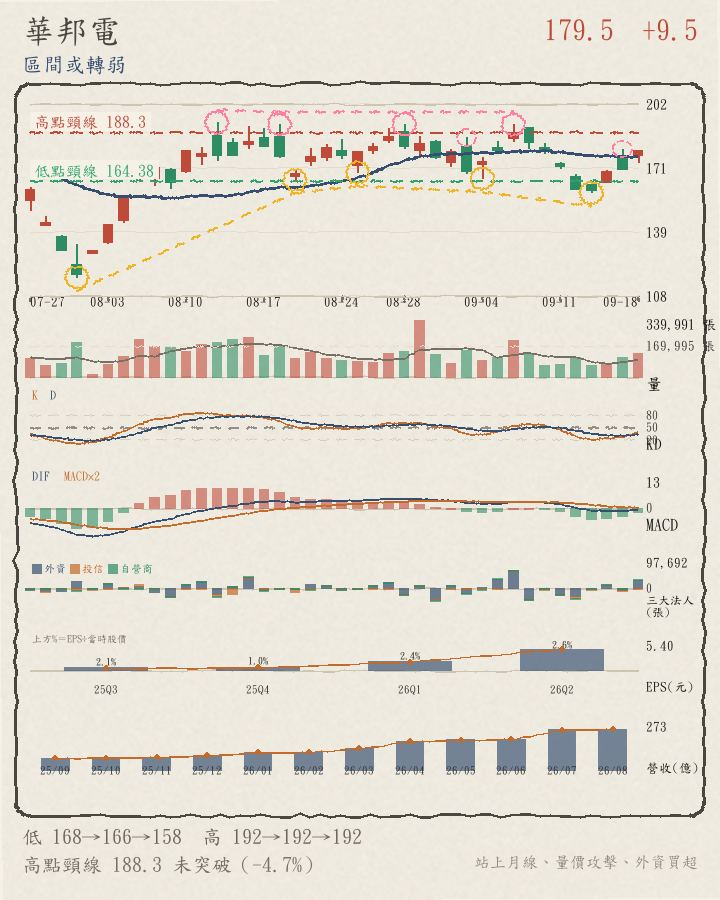
今天收紅、但成交量比平均少、站上月線 174.975，離高點頸線 182.5 還差 1.6%，轉折還沒走出明顯方向。
- 月線位置：收盤 179.5 在月線 174.975 之上；5 日線 179.4 也在月線之上（短均在上）；月線向上、5 日線向上
- 量能：成交量是 20 日均量的 0.69 倍，比 20 日均量少很多；收紅但量縮，量價背離
- 關鍵價位：高點頸線 182.5 還沒突破，差 1.6%；最近轉折高點 184（低於 2.4%）；最近轉折低點 166（高於 8.1%）
- 轉折結構：低點 165.5、158.5、166 與高點 192、180.5、184 都沒有明顯遞增，屬於區間震盪或轉弱；還沒確認的轉折低點 10-05 174、10-07 175；還沒確認的轉折高點 10-06 183（圖上虛線小圈）
剛突破前高 成交金額 107.5 億・全榜第 35 名（上市第 27 名）
好條件 2/8：站上月線、頭頭高
不好條件 6/8：今日下跌、相對大盤弱、量增下跌（出貨）、外資賣超、月線下彎、收盤跌破前一日低點
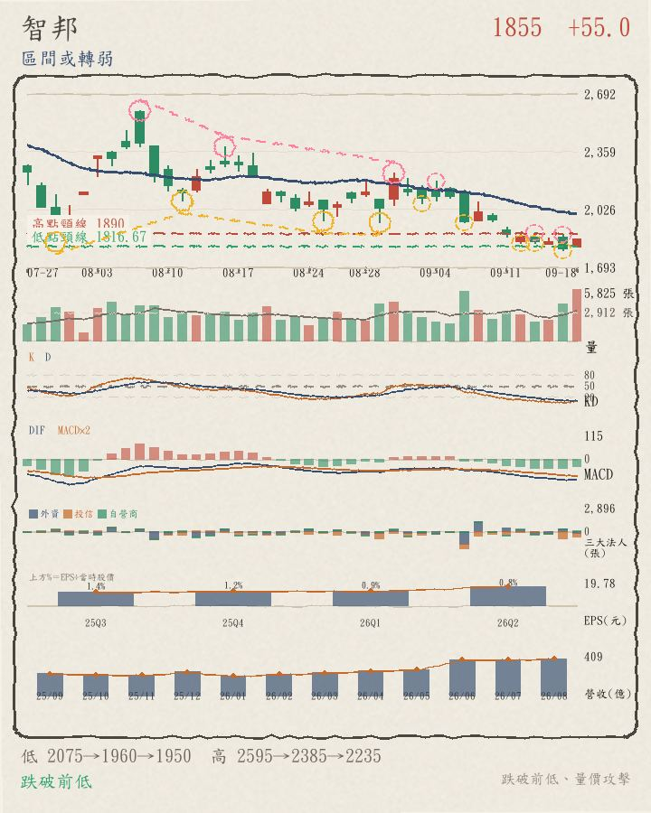
今天帶量收黑、站上月線 1908，離高點頸線 2125 還差 5.2%，高點還在墊高（但底部沒同步墊高）。
- 月線位置：收盤 2015 在月線 1908 之上；5 日線 2001 也在月線之上（短均在上）；月線走平或向下、5 日線向上
- 量能：成交量是 20 日均量的 1.35 倍，比 20 日均量大不少；收黑卻量增，量價背離
- 關鍵價位：高點頸線 2125 還沒突破，差 5.2%；最近轉折高點 1955（高於 3.1%）；最近轉折低點 1770（高於 13.8%）
- 轉折結構：高點 2385、2235、1955 墊高 9.5%（頭頭高），但低點 1950、1790、1770 沒有同步墊高；還沒確認的轉折低點 09-23 1845、10-07 2005；還沒確認的轉折高點 10-05 2110、10-07 2140（圖上虛線小圈）
底部墊高、突破前高 成交金額 91.37 億・全榜第 37 名（上市第 28 名）
好條件 4/8：站上月線、月線向上、底底高、頭頭高
不好條件 5/8：今日下跌、相對大盤弱、量增下跌（出貨）、外資賣超、收盤跌破前一日低點
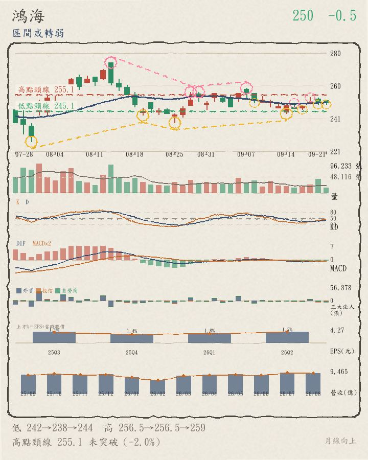
今天帶量收黑、站上月線 251.25，離高點頸線 255.6 還差 1.4%，轉折結構仍是底底高＋頭頭高。
- 月線位置：收盤 252 在月線 251.25 之上；5 日線 253.4 也在月線之上（短均在上）；月線向上、5 日線向上
- 量能：成交量是 20 日均量的 1.10 倍，比 20 日均量大一些；收黑卻量增，量價背離
- 關鍵價位：高點頸線 255.6 還沒突破，差 1.4%；最近轉折高點 257（低於 1.9%）；最近轉折低點 247（高於 2.0%）
- 轉折結構：低點 238、243.5、247 一路墊高 3.8%、高點 256.5、259、257 也一路墊高 3.7%，是底底高＋頭頭高；還沒確認的轉折低點 10-02 250.5、10-07 251.5；還沒確認的轉折高點 10-01 254、10-06 266.5（圖上虛線小圈）
剛突破前高 成交金額 86.14 億・全榜第 38 名（上市第 29 名）
好條件 4/8：站上月線、月線向上、頭頭高、外資買超
不好條件 4/8：今日下跌、相對大盤弱、量增下跌（出貨）、收盤跌破前一日低點
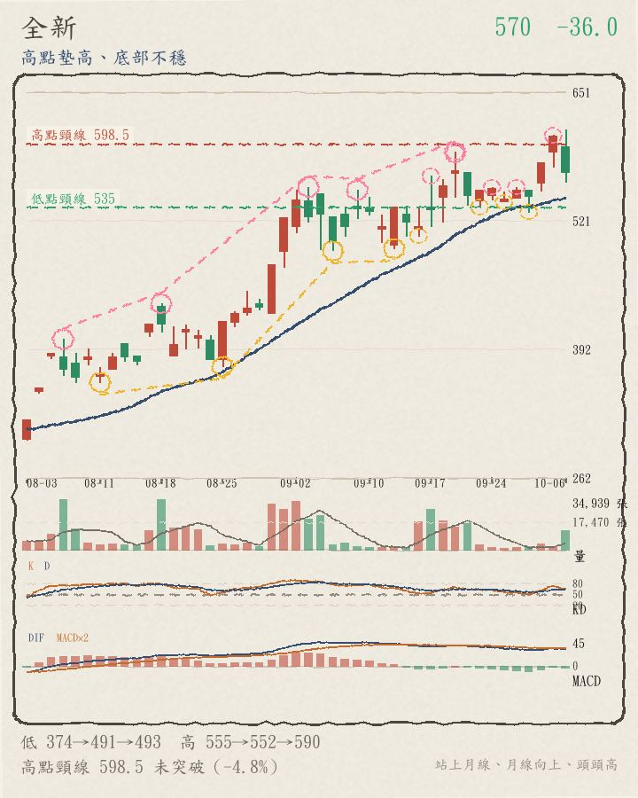
今天帶量收黑、站上月線 546.65，離高點頸線 601.5 還差 7.1%，高點還在墊高（但底部沒同步墊高）。
- 月線位置：收盤 559 在月線 546.65 之上；5 日線 571.6 也在月線之上（短均在上）；月線向上、5 日線向上
- 量能：成交量是 20 日均量的 2.07 倍，比 20 日均量大不少；收黑卻量增，量價背離
- 關鍵價位：高點頸線 601.5 還沒突破，差 7.1%；最近轉折高點 590（低於 5.3%）；最近轉折低點 530（高於 5.5%）
- 轉折結構：高點 555、552、590 墊高 3.9%（頭頭高），但低點 491、493、530 沒有同步墊高；還沒確認的轉折低點 09-29 540、10-07 547；還沒確認的轉折高點 09-30 555、10-06 613（圖上虛線小圈）
高點墊高、底部不穩 成交金額 85.26 億・全榜第 39 名（上市第 30 名）
好條件 7/8：站上月線、月線向上、頭頭高、突破頸線、相對大盤強、外資買超、量價攻擊（收紅＋大量）
不好條件 0/8：無

今天帶量收紅、站上月線 65.81，已站上高點頸線 70.13，高點還在墊高（但底部沒同步墊高）。
- 月線位置：收盤 75.4 在月線 65.81 之上；5 日線 69.52 也在月線之上（短均在上）；月線向上、5 日線向上
- 量能：成交量是 20 日均量的 4.85 倍，比 20 日均量大不少；收紅又量增，量價配合
- 關鍵價位：高點頸線 70.13 已站上；最近轉折高點 71.2（高於 5.9%）；最近轉折低點 62（高於 21.6%）
- 轉折結構：高點 57.2、61.8、71.2 墊高 24.5%（頭頭高），但低點 64.1、61.2、62 沒有同步墊高；還沒確認的轉折低點 10-06 67.5；還沒確認的轉折高點 10-05 69.6、10-07 75.4（圖上虛線小圈）
高點墊高、底部不穩 成交金額 82.92 億・全榜第 40 名（上市第 31 名）
好條件 2/8：站上月線、頭頭高
不好條件 4/8：今日下跌、相對大盤弱、外資賣超、月線下彎
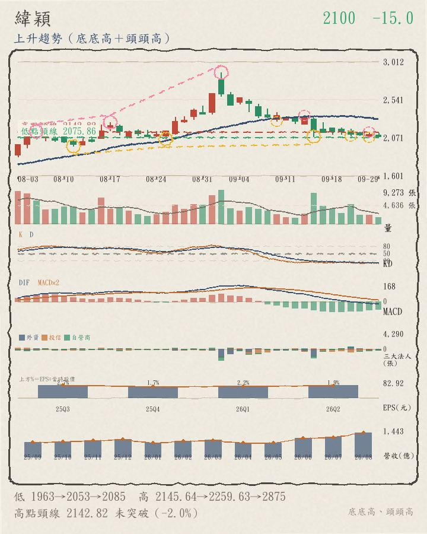
今天收黑、成交量也比平均少、站上月線 2194.75，離高點頸線 2297.31 還差 2.5%，高點還在墊高（但底部沒同步墊高）。
- 月線位置：收盤 2240 在月線 2194.75 之上；5 日線 2175 也在月線之下（短均在下）；月線走平或向下、5 日線向上
- 量能：成交量是 20 日均量的 0.90 倍，比 20 日均量少一些
- 關鍵價位：高點頸線 2297.31 還沒突破，差 2.5%；最近轉折高點 2875（低於 22.1%）；最近轉折低點 2080（高於 7.7%）
- 轉折結構：高點 2145.64、2259.63、2875 墊高 34.0%（頭頭高），但低點 2085、2075、2080 沒有同步墊高；還沒確認的轉折低點 09-22 2090；還沒確認的轉折高點 09-30 2145、10-06 2335（圖上虛線小圈）
高點墊高、底部不穩 成交金額 80.12 億・全榜第 41 名（上市第 32 名）
好條件 4/8：站上月線、月線向上、頭頭高、外資買超
不好條件 2/8：今日下跌、相對大盤弱
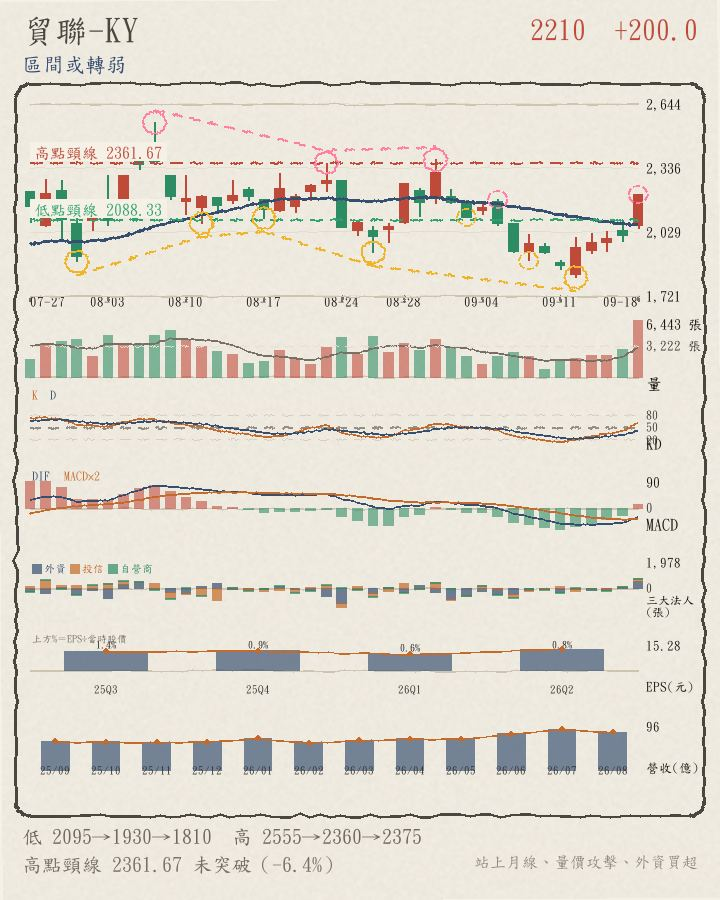
今天收黑、站上月線 2217.5，離高點頸線 2677.5 還差 13.5%，高點還在墊高（但底部沒同步墊高）。
- 月線位置：收盤 2315 在月線 2217.5 之上；5 日線 2444 也在月線之上（短均在上）；月線向上、5 日線向上
- 量能：成交量是 20 日均量的 1.00 倍，跟 20 日均量差不多
- 關鍵價位：高點頸線 2677.5 還沒突破，差 13.5%；最近轉折高點 2685（低於 13.8%）；最近轉折低點 1810（高於 27.9%）
- 轉折結構：高點 2360、2375、2685 墊高 13.8%（頭頭高），但低點 2095、1930、1810 沒有同步墊高；還沒確認的轉折低點 10-06 2260；還沒確認的轉折高點 09-24 2470、10-02 2670（圖上虛線小圈）
高點墊高、底部不穩 成交金額 72.61 億・全榜第 42 名（上市第 33 名）
好條件 7/8：站上月線、月線向上、頭頭高、突破頸線、相對大盤強、外資買超、量價攻擊（收紅＋大量）
不好條件 0/8：無

今天帶量收紅、站上月線 77.09，已站上高點頸線 94.85，高點還在墊高（但底部沒同步墊高）。
- 月線位置：收盤 102 在月線 77.09 之上；5 日線 94.6 也在月線之上（短均在上）；月線向上、5 日線向上
- 量能：成交量是 20 日均量的 5.62 倍，比 20 日均量大不少；收紅又量增，量價配合
- 關鍵價位：高點頸線 94.85 已站上；最近轉折高點 95.7（高於 6.6%）；最近轉折低點 61.4（高於 66.1%）
- 轉折結構：高點 71.6、77.5、95.7 墊高 33.7%（頭頭高），但低點 63.6、62.9、61.4 沒有同步墊高；還沒確認的轉折低點 09-24 75.6、10-01 86.1；還沒確認的轉折高點 10-02 94、10-07 108（圖上虛線小圈）
區間或轉弱 成交金額 71.44 億・全榜第 43 名（上市第 34 名）
好條件 5/8：站上月線、突破頸線、相對大盤強、外資買超、量價攻擊（收紅＋大量）
不好條件 1/8：月線下彎
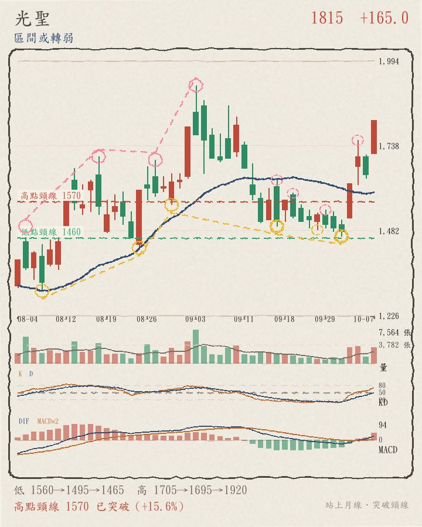
今天帶量收紅、站上月線 1598.5，已站上高點頸線 1725，轉折還沒走出明顯方向。
- 月線位置：收盤 1815 在月線 1598.5 之上；5 日線 1655 也在月線之上（短均在上）；月線走平或向下、5 日線向上
- 量能：成交量是 20 日均量的 1.99 倍，比 20 日均量大不少；收紅又量增，量價配合
- 關鍵價位：高點頸線 1725 已站上；最近轉折高點 1920（低於 5.5%）；最近轉折低點 1465（高於 23.9%）
- 轉折結構：低點 1560、1495、1465 與高點 1705、1695、1920 都沒有明顯遞增，屬於區間震盪或轉弱；還沒確認的轉折低點 09-24 1485；還沒確認的轉折高點 10-05 1755、10-07 1815（圖上虛線小圈）
高點墊高、底部不穩 成交金額 71.26 億・全榜第 44 名（上市第 35 名）
好條件 4/8：站上月線、月線向上、頭頭高、相對大盤強
不好條件 1/8：外資賣超

今天收紅、站上月線 285.75，離高點頸線 304.25 還差 1.6%，高點還在墊高（但底部沒同步墊高）。
- 月線位置：收盤 299.5 在月線 285.75 之上；5 日線 296.6 也在月線之上（短均在上）；月線向上、5 日線走平或向下
- 量能：成交量是 20 日均量的 0.97 倍，跟 20 日均量差不多
- 關鍵價位：高點頸線 304.25 還沒突破，差 1.6%；最近轉折高點 330（低於 9.2%）；最近轉折低點 253（高於 18.4%）
- 轉折結構：高點 262、283.5、330 墊高 26.0%（頭頭高），但低點 225、259、253 沒有同步墊高；還沒確認的轉折低點 10-02 292、10-06 288.5；還沒確認的轉折高點 10-05 303.5、10-07 305（圖上虛線小圈）
剛突破前高 成交金額 69.77 億・全榜第 46 名（上市第 36 名）
好條件 4/8：站上月線、月線向上、頭頭高、外資買超
不好條件 3/8：今日下跌、相對大盤弱、收盤跌破前一日低點
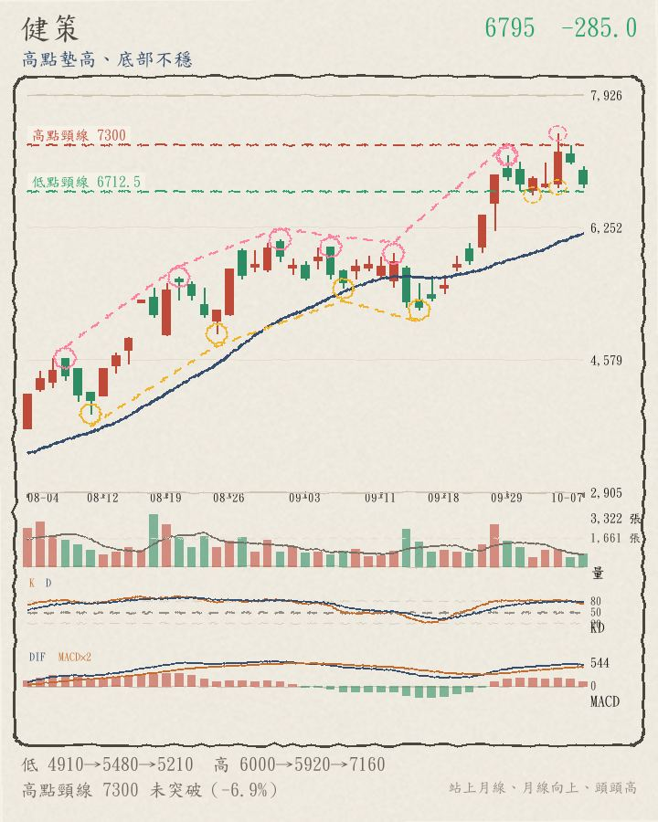
今天收黑、成交量也比平均少、站上月線 6176.25，離高點頸線 7300 還差 6.8%，高點還在墊高（但底部沒同步墊高）。
- 月線位置：收盤 6805 在月線 6176.25 之上；5 日線 6953 也在月線之上（短均在上）；月線向上、5 日線向上
- 量能：成交量是 20 日均量的 0.90 倍，比 20 日均量少一些
- 關鍵價位：高點頸線 7300 還沒突破，差 6.8%；最近轉折高點 7160（低於 5.0%）；最近轉折低點 5210（高於 30.6%）
- 轉折結構：高點 6000、5920、7160 墊高 3.9%（頭頭高），但低點 4910、5480、5210 沒有同步墊高；還沒確認的轉折低點 10-05 6760、10-07 6760；還沒確認的轉折高點 10-05 7440（圖上虛線小圈）
剛突破前高 成交金額 68.93 億・全榜第 47 名（上市第 37 名）
好條件 7/8：站上月線、月線向上、頭頭高、突破頸線、相對大盤強、外資買超、量價攻擊（收紅＋大量）
不好條件 0/8：無

今天帶量收紅、站上月線 59.15，已站上高點頸線 61.8，高點還在墊高（但底部沒同步墊高）。
- 月線位置：收盤 65.7 在月線 59.15 之上；5 日線 60.62 也在月線之上（短均在上）；月線向上、5 日線向上
- 量能：成交量是 20 日均量的 6.45 倍，比 20 日均量大不少；收紅又量增，量價配合
- 關鍵價位：高點頸線 61.8 已站上；最近轉折高點 61.7（高於 6.5%）；最近轉折低點 56.6（高於 16.1%）
- 轉折結構：高點 64、61.7、61.7 墊高 6.5%（頭頭高），但低點 57.5、56、56.6 沒有同步墊高；還沒確認的轉折低點 09-18 57.9、10-06 58.8；還沒確認的轉折高點 10-05 61.4、10-07 65.7（圖上虛線小圈）
剛突破前高 成交金額 67.83 億・全榜第 48 名（上市第 38 名）
好條件 2/8：月線向上、頭頭高
不好條件 5/8：今日下跌、相對大盤弱、在月線之下、外資賣超、收盤跌破前一日低點
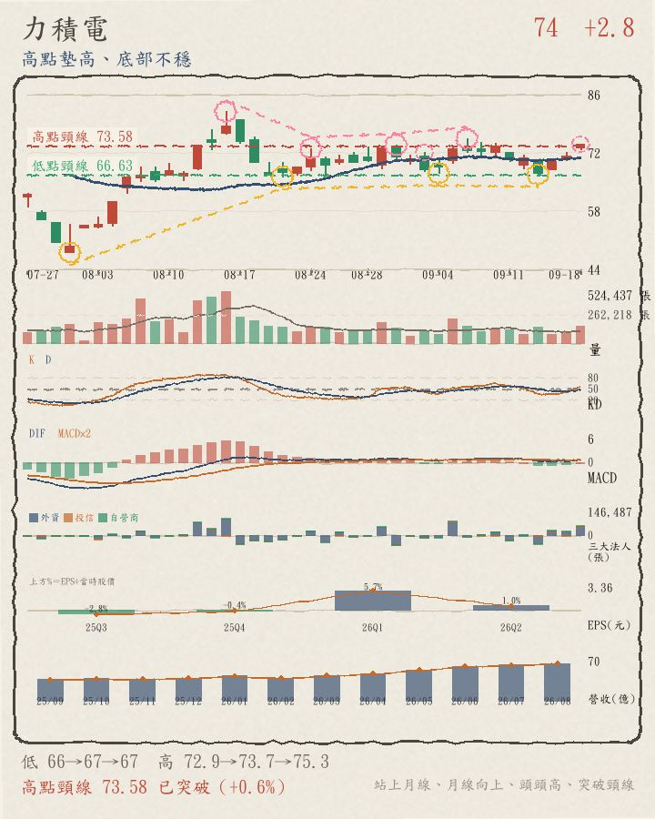
今天收黑、成交量也比平均少、跌破月線 72.63，離高點頸線 74.4 還差 2.4%，高點還在墊高（但底部沒同步墊高）。
- 月線位置：收盤 72.6 在月線 72.63 之下；5 日線 74.74 也在月線之上（短均在上）；月線向上、5 日線向上
- 量能：成交量是 20 日均量的 0.74 倍，比 20 日均量少很多
- 關鍵價位：高點頸線 74.4 還沒突破，差 2.4%；最近轉折高點 74.7（低於 2.8%）；最近轉折低點 70.5（高於 3.0%）
- 轉折結構：高點 73.7、75.3、74.7 墊高 4.6%（頭頭高），但低點 67、66.7、70.5 沒有同步墊高；還沒確認的轉折低點 10-01 73.3、10-07 72.4；還沒確認的轉折高點 09-30 75.4、10-05 78.1（圖上虛線小圈）
底部墊高、突破前高 成交金額 65.85 億・全榜第 50 名（上市第 39 名）
好條件 5/8：站上月線、底底高、頭頭高、相對大盤強、量價攻擊（收紅＋大量）
不好條件 2/8：外資賣超、月線下彎

今天帶量收紅、站上月線 525.575，離高點頸線 559.4 還差 4.4%，轉折結構仍是底底高＋頭頭高。
- 月線位置：收盤 535 在月線 525.575 之上；5 日線 534.4 也在月線之上（短均在上）；月線走平或向下、5 日線向上
- 量能：成交量是 20 日均量的 1.67 倍，比 20 日均量大不少；收紅又量增，量價配合
- 關鍵價位：高點頸線 559.4 還沒突破，差 4.4%；最近轉折高點 565（低於 5.3%）；最近轉折低點 505（高於 5.9%）
- 轉折結構：低點 483、489、505 一路墊高 4.6%、高點 600、653、565 也一路墊高 1.6%，是底底高＋頭頭高；還沒確認的轉折低點 10-01 508、10-06 530；還沒確認的轉折高點 10-05 574、10-07 559（圖上虛線小圈）
剛突破前高 成交金額 65.25 億・全榜第 51 名（上市第 40 名）
好條件 5/8：站上月線、月線向上、頭頭高、相對大盤強、量價攻擊（收紅＋大量）
不好條件 1/8：外資賣超
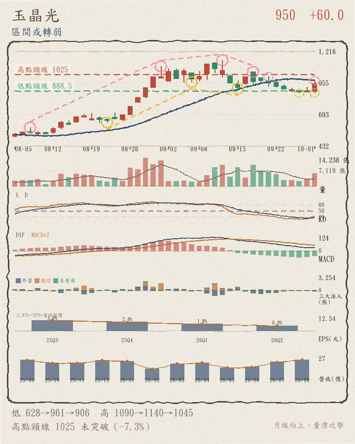
今天帶量收紅、站上月線 980.5，離高點頸線 1105 還差 1.8%，高點還在墊高（但底部沒同步墊高）。
- 月線位置：收盤 1085 在月線 980.5 之上；5 日線 1019.2 也在月線之上（短均在上）；月線向上、5 日線向上
- 量能：成交量是 20 日均量的 1.05 倍，比 20 日均量大一些；收紅又量增，量價配合
- 關鍵價位：高點頸線 1105 還沒突破，差 1.8%；最近轉折高點 1045（高於 3.8%）；最近轉折低點 869（高於 24.9%）
- 轉折結構：高點 1090、1140、1045 墊高 7.2%（頭頭高），但低點 961、906、869 沒有同步墊高；還沒確認的轉折低點 10-01 871；還沒確認的轉折高點 09-21 1005、10-07 1120（圖上虛線小圈）
上升趨勢（底底高＋頭頭高） 成交金額 60.5 億・全榜第 53 名（上市第 41 名）
好條件 5/8：站上月線、月線向上、底底高、頭頭高、突破頸線
不好條件 4/8：今日下跌、相對大盤弱、外資賣超、收盤跌破前一日低點
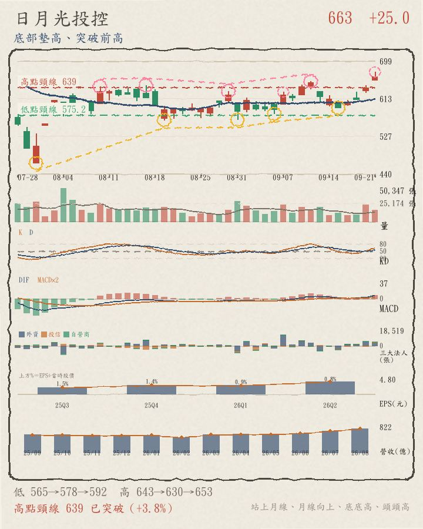
今天收黑、成交量也比平均少、站上月線 668.3，已站上高點頸線 715，轉折結構仍是底底高＋頭頭高。
- 月線位置：收盤 732 在月線 668.3 之上；5 日線 728.2 也在月線之上（短均在上）；月線向上、5 日線向上
- 量能：成交量是 20 日均量的 0.55 倍，比 20 日均量少很多
- 關鍵價位：高點頸線 715 已站上；最近轉折高點 711（高於 3.0%）；最近轉折低點 678（高於 8.0%）
- 轉折結構：低點 578、592、678 一路墊高 17.3%、高點 630、653、711 也一路墊高 12.9%，是底底高＋頭頭高；還沒確認的轉折低點 10-01 693、10-07 728；還沒確認的轉折高點 09-30 723、10-05 758（圖上虛線小圈）
區間或轉弱 成交金額 53.68 億・全榜第 54 名（上市第 42 名）
好條件 4/8：站上月線、突破頸線、相對大盤強、外資買超
不好條件 1/8：月線下彎

今天收紅、但成交量比平均少、站上月線 279.05，已站上高點頸線 304.25，轉折還沒走出明顯方向。
- 月線位置：收盤 304.5 在月線 279.05 之上；5 日線 297.6 也在月線之上（短均在上）；月線走平或向下、5 日線向上
- 量能：成交量是 20 日均量的 0.86 倍，比 20 日均量少一些；收紅但量縮，量價背離
- 關鍵價位：高點頸線 304.25 已站上；最近轉折高點 327.5（低於 7.0%）；最近轉折低點 253（高於 20.4%）
- 轉折結構：低點 291、256.5、253 與高點 254、364、327.5 都沒有明顯遞增，屬於區間震盪或轉弱；還沒確認的轉折低點 10-02 280.5、10-07 288；還沒確認的轉折高點 09-30 300.5、10-05 308（圖上虛線小圈）
上升趨勢（底底高＋頭頭高） 成交金額 53.32 億・全榜第 55 名（上市第 43 名）
好條件 8/8：站上月線、月線向上、底底高、頭頭高、突破頸線、相對大盤強、外資買超、量價攻擊（收紅＋大量）
不好條件 0/8：無

今天帶量收紅、站上月線 204.5，已站上高點頸線 214，轉折結構仍是底底高＋頭頭高。
- 月線位置：收盤 250.5 在月線 204.5 之上；5 日線 227.6 也在月線之上（短均在上）；月線向上、5 日線向上
- 量能：成交量是 20 日均量的 3.46 倍，比 20 日均量大不少；收紅又量增，量價配合
- 關鍵價位：高點頸線 214 已站上；最近轉折高點 223（高於 12.3%）；最近轉折低點 179.5（高於 39.6%）
- 轉折結構：低點 168、172、179.5 一路墊高 6.8%、高點 181.5、210、223 也一路墊高 22.9%，是底底高＋頭頭高；還沒確認的轉折低點 09-24 204.5、10-05 211.5；還沒確認的轉折高點 09-23 218、10-07 250.5（圖上虛線小圈）
剛突破前高 成交金額 52.58 億・全榜第 56 名（上市第 44 名）
好條件 5/8：站上月線、月線向上、頭頭高、相對大盤強、外資買超
不好條件 0/8：無
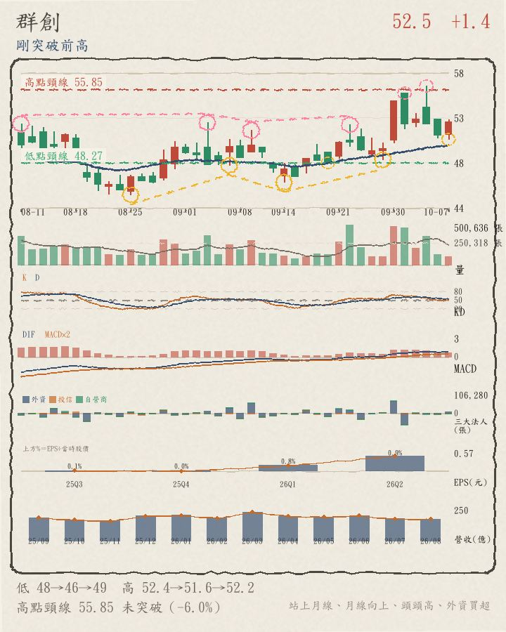
今天收紅、但成交量比平均少、站上月線 50.067，離高點頸線 55.85 還差 6.0%，高點還在墊高（但底部沒同步墊高）。
- 月線位置：收盤 52.5 在月線 50.067 之上；5 日線 52.2 也在月線之上（短均在上）；月線向上、5 日線向上
- 量能：成交量是 20 日均量的 0.46 倍，比 20 日均量少很多；收紅但量縮，量價背離
- 關鍵價位：高點頸線 55.85 還沒突破，差 6.0%；最近轉折高點 52.2（高於 0.6%）；最近轉折低點 48.55（高於 8.1%）
- 轉折結構：高點 52.4、51.6、52.2 墊高 7.7%（頭頭高），但低點 48、46.25、48.55 沒有同步墊高；還沒確認的轉折低點 09-18 48.25、10-07 50.7；還沒確認的轉折高點 10-01 55.5、10-05 56.2（圖上虛線小圈）
底部墊高、未過前高 成交金額 52.31 億・全榜第 57 名（上市第 45 名）
好條件 3/8：站上月線、月線向上、底底高
不好條件 4/8：今日下跌、相對大盤弱、量增下跌（出貨）、外資賣超

今天帶量收黑、站上月線 155.225，離高點頸線 186.5 還差 10.5%，底部還在墊高（但高點沒同步創高）。
- 月線位置：收盤 167 在月線 155.225 之上；5 日線 171.1 也在月線之上（短均在上）；月線向上、5 日線走平或向下
- 量能：成交量是 20 日均量的 1.51 倍，比 20 日均量大不少；收黑卻量增，量價背離
- 關鍵價位：高點頸線 186.5 還沒突破，差 10.5%；最近轉折高點 190.5（低於 12.3%）；最近轉折低點 118（高於 41.5%）
- 轉折結構：低點 106.5、113.5、118 墊高 10.8%（底底高），但高點 141、134.5、190.5 沒有同步創高；還沒確認的轉折低點 10-01 168.5、10-06 160；還沒確認的轉折高點 10-02 182、10-07 185（圖上虛線小圈）
剛突破前高 成交金額 52.09 億・全榜第 58 名（上市第 46 名）
好條件 3/8：站上月線、月線向上、頭頭高
不好條件 5/8：今日下跌、相對大盤弱、量增下跌（出貨）、外資賣超、收盤跌破前一日低點
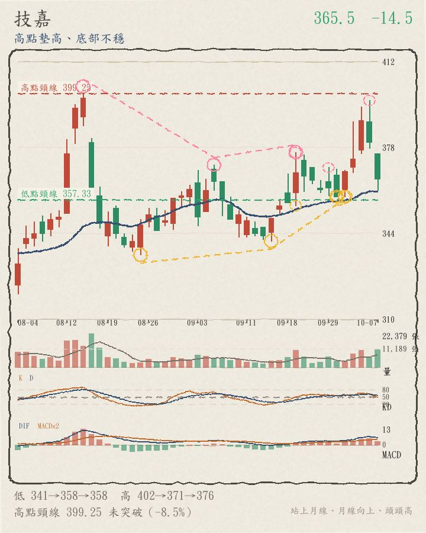
今天帶量收黑、站上月線 360.625，離高點頸線 399.25 還差 8.5%，高點還在墊高（但底部沒同步墊高）。
- 月線位置：收盤 365.5 在月線 360.625 之上；5 日線 375.2 也在月線之上（短均在上）；月線向上、5 日線向上
- 量能：成交量是 20 日均量的 2.58 倍，比 20 日均量大不少；收黑卻量增，量價背離
- 關鍵價位：高點頸線 399.25 還沒突破，差 8.5%；最近轉折高點 376（低於 2.8%）；最近轉折低點 358.5（高於 2.0%）
- 轉折結構：高點 402、371、376 墊高 5.5%（頭頭高），但低點 341、358.5、358.5 沒有同步墊高；還沒確認的轉折低點 09-21 355、10-07 361；還沒確認的轉折高點 09-29 370、10-06 396.5（圖上虛線小圈）
上升趨勢（底底高＋頭頭高） 成交金額 50.52 億・全榜第 59 名（上市第 47 名）
好條件 8/8：站上月線、月線向上、底底高、頭頭高、突破頸線、相對大盤強、外資買超、量價攻擊（收紅＋大量）
不好條件 0/8：無

今天帶量收紅、站上月線 445.15，已站上高點頸線 501，轉折結構仍是底底高＋頭頭高。
- 月線位置：收盤 513 在月線 445.15 之上；5 日線 479.8 也在月線之上（短均在上）；月線向上、5 日線向上
- 量能：成交量是 20 日均量的 1.33 倍，比 20 日均量大不少；收紅又量增，量價配合
- 關鍵價位：高點頸線 501 已站上；最近轉折高點 497.5（高於 3.1%）；最近轉折低點 430.5（高於 19.2%）
- 轉折結構：低點 367.5、400、430.5 一路墊高 17.1%、高點 438.5、474、497.5 也一路墊高 13.5%，是底底高＋頭頭高；還沒確認的轉折低點 10-02 463、10-06 460.5；還沒確認的轉折高點 10-05 492.5、10-07 513（圖上虛線小圈）
剛突破前高 成交金額 49.77 億・全榜第 60 名（上市第 48 名）
好條件 1/8：頭頭高
不好條件 6/8：今日下跌、相對大盤弱、在月線之下、外資賣超、月線下彎、收盤跌破前一日低點

今天收黑、成交量也比平均少、跌破月線 185.4，離高點頸線 191.12 還差 3.2%，高點還在墊高（但底部沒同步墊高）。
- 月線位置：收盤 185 在月線 185.4 之下；5 日線 188.2 也在月線之上（短均在上）；月線走平或向下、5 日線向上
- 量能：成交量是 20 日均量的 0.59 倍，比 20 日均量少很多
- 關鍵價位：高點頸線 191.12 還沒突破，差 3.2%；最近轉折高點 190.5（低於 2.9%）；最近轉折低點 178（高於 3.9%）
- 轉折結構：高點 188、200.5、190.5 墊高 2.1%（頭頭高），但低點 174、179.5、178 沒有同步墊高；還沒確認的轉折低點 10-07 185；還沒確認的轉折高點 10-01 191.5、10-06 194.5（圖上虛線小圈）
剛突破前高 成交金額 49.5 億・全榜第 61 名（上市第 49 名）
好條件 5/8：站上月線、頭頭高、相對大盤強、外資買超、量價攻擊（收紅＋大量）
不好條件 1/8：月線下彎

今天收紅、站上月線 285.35，離高點頸線 302 還差 0.7%，高點還在墊高（但底部沒同步墊高）。
- 月線位置：收盤 300 在月線 285.35 之上；5 日線 292.6 也在月線之上（短均在上）；月線走平或向下、5 日線向上
- 量能：成交量是 20 日均量的 1.03 倍，跟 20 日均量差不多
- 關鍵價位：高點頸線 302 還沒突破，差 0.7%；最近轉折高點 299.5（高於 0.2%）；最近轉折低點 278（高於 7.9%）
- 轉折結構：高點 286.5、328、299.5 墊高 1.7%（頭頭高），但低點 271、278、278 沒有同步墊高；還沒確認的轉折高點 10-01 285、10-07 304.5（圖上虛線小圈）
剛突破前高 成交金額 48.82 億・全榜第 62 名（上市第 50 名）
好條件 2/8：頭頭高、外資買超
不好條件 5/8：今日下跌、相對大盤弱、在月線之下、月線下彎、收盤跌破前一日低點
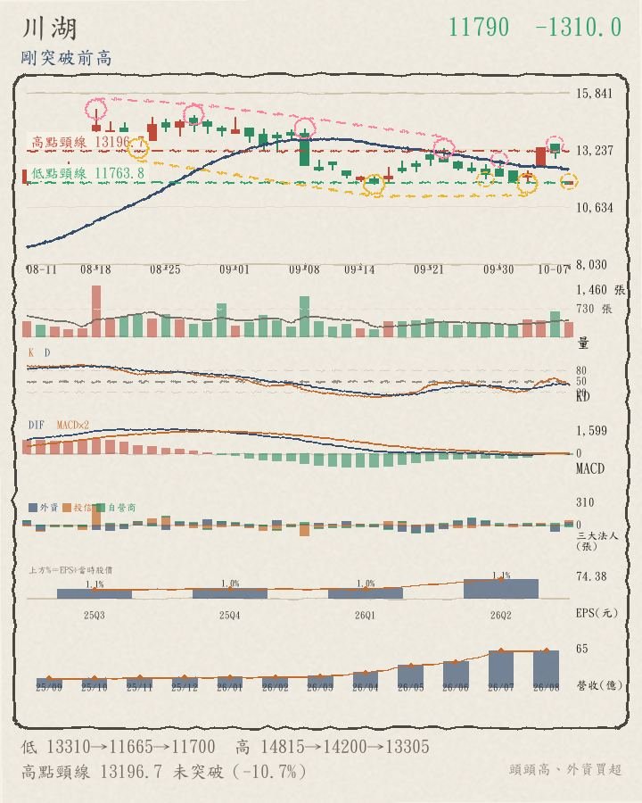
今天收黑、跌破月線 12337.2，離高點頸線 13196.7 還差 10.7%，高點還在墊高（但底部沒同步墊高）。
- 月線位置：收盤 11790 在月線 12337.2 之下；5 日線 12445 也在月線之上（短均在上）；月線走平或向下、5 日線向上
- 量能：成交量是 20 日均量的 0.97 倍，跟 20 日均量差不多
- 關鍵價位：高點頸線 13196.7 還沒突破，差 10.7%；最近轉折高點 13305（低於 11.4%）；最近轉折低點 11700（高於 0.8%）
- 轉折結構：高點 14815、14200、13305 墊高 1.5%（頭頭高），但低點 13310、11665、11700 沒有同步墊高；還沒確認的轉折低點 09-29 11900、10-07 11790；還沒確認的轉折高點 09-30 12785、10-06 13500（圖上虛線小圈）
剛突破前高 成交金額 203.81 億・全榜第 9 名（上櫃第 1 名）
好條件 3/8：站上月線、月線向上、頭頭高
不好條件 4/8：今日下跌、相對大盤弱、量增下跌（出貨）、外資賣超
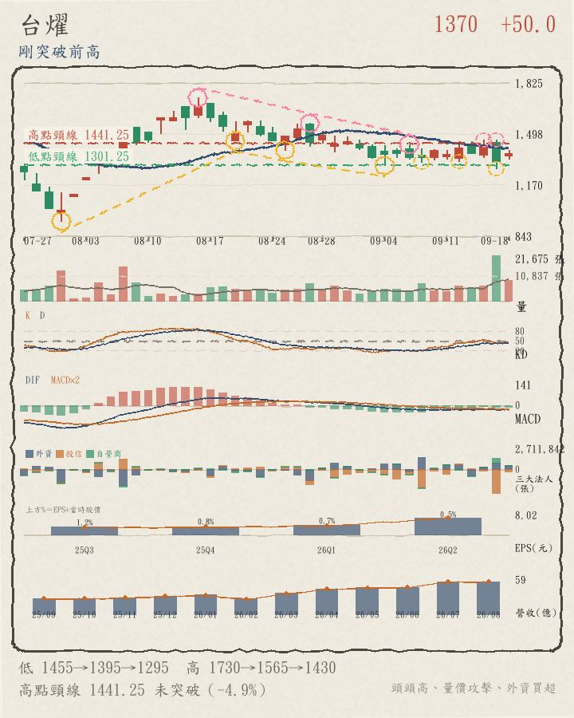
今天帶量收黑、站上月線 1479，離高點頸線 1807.5 還差 4.8%，高點還在墊高（但底部沒同步墊高）。
- 月線位置：收盤 1720 在月線 1479 之上；5 日線 1682 也在月線之上（短均在上）；月線向上、5 日線向上
- 量能：成交量是 20 日均量的 1.40 倍，比 20 日均量大不少；收黑卻量增，量價背離
- 關鍵價位：高點頸線 1807.5 還沒突破，差 4.8%；最近轉折高點 1460（高於 17.8%）；最近轉折低點 1275（高於 34.9%）
- 轉折結構：高點 1565、1430、1460 墊高 25.7%（頭頭高），但低點 1395、1295、1275 沒有同步墊高；還沒確認的轉折低點 09-29 1465、10-06 1680；還沒確認的轉折高點 10-05 1780、10-07 1835（圖上虛線小圈）
底部墊高、突破前高 成交金額 181.48 億・全榜第 12 名（上櫃第 2 名）
好條件 7/8：站上月線、月線向上、底底高、頭頭高、相對大盤強、外資買超、量價攻擊（收紅＋大量）
不好條件 0/8：無
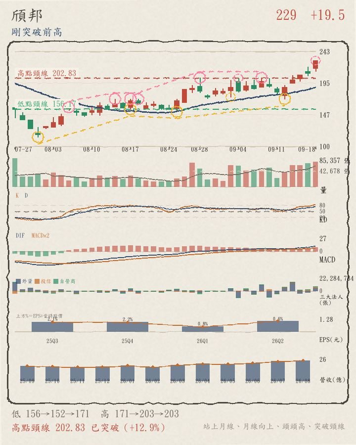
今天帶量收紅、站上月線 209.625，離高點頸線 231.5 還差 0.0%，轉折結構仍是底底高＋頭頭高。
- 月線位置：收盤 231.5 在月線 209.625 之上；5 日線 222.5 也在月線之上（短均在上）；月線向上、5 日線向上
- 量能：成交量是 20 日均量的 1.86 倍，比 20 日均量大不少；收紅又量增，量價配合
- 關鍵價位：高點頸線 231.5 還沒突破，差 0.0%；最近轉折高點 233（低於 0.6%）；最近轉折低點 208（高於 11.3%）
- 轉折結構：低點 152、171、208 一路墊高 36.8%、高點 203、203、233 也一路墊高 2.1%，是底底高＋頭頭高；還沒確認的轉折低點 10-06 211；還沒確認的轉折高點 10-05 228、10-07 238（圖上虛線小圈）
剛突破前高 成交金額 164.39 億・全榜第 13 名（上櫃第 3 名）
好條件 4/8：站上月線、頭頭高、相對大盤強、量價攻擊（收紅＋大量）
不好條件 2/8：外資賣超、月線下彎
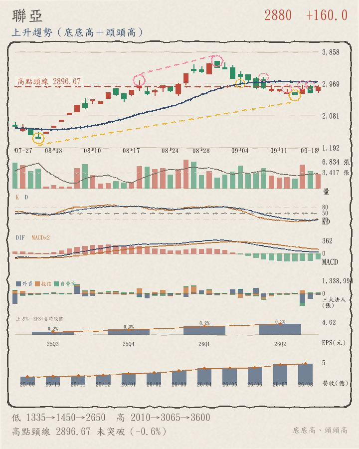
今天帶量收紅、站上月線 2812.5，離高點頸線 3157.5 還差 0.6%，高點還在墊高（但底部沒同步墊高）。
- 月線位置：收盤 3140 在月線 2812.5 之上；5 日線 2929 也在月線之上（短均在上）；月線走平或向下、5 日線向上
- 量能：成交量是 20 日均量的 1.80 倍，比 20 日均量大不少；收紅又量增，量價配合
- 關鍵價位：高點頸線 3157.5 還沒突破，差 0.6%；最近轉折高點 2950（高於 6.4%）；最近轉折低點 2585（高於 21.5%）
- 轉折結構：高點 3600、2930、2950 墊高 8.8%（頭頭高），但低點 1450、2650、2585 沒有同步墊高；還沒確認的轉折低點 10-01 2605；還沒確認的轉折高點 10-05 3105、10-07 3210（圖上虛線小圈）
剛突破前高 成交金額 160.87 億・全榜第 14 名（上櫃第 4 名）
好條件 6/8：站上月線、月線向上、頭頭高、突破頸線、相對大盤強、量價攻擊（收紅＋大量）
不好條件 1/8：外資賣超
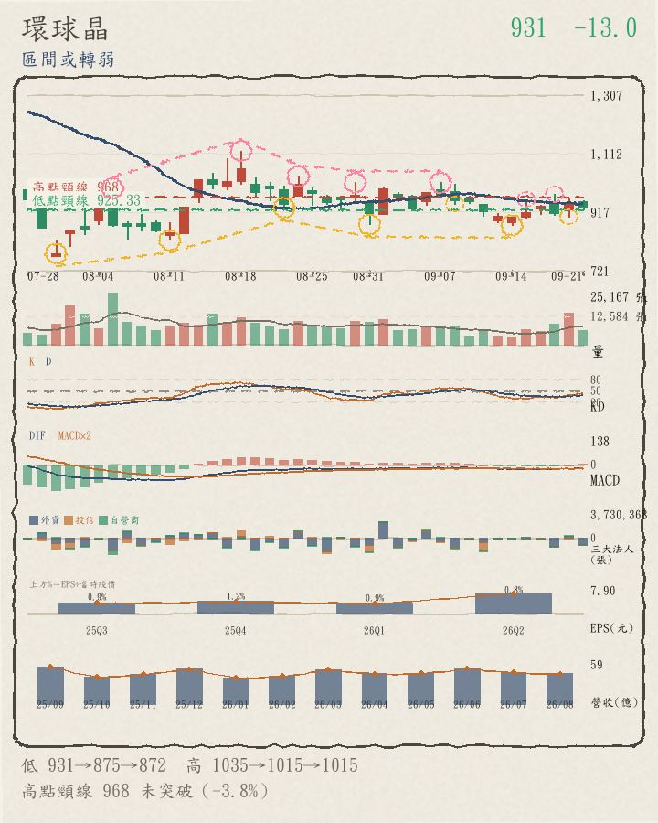
今天帶量收紅、站上月線 999.55，已站上高點頸線 1018.75，高點還在墊高（但底部沒同步墊高）。
- 月線位置：收盤 1215 在月線 999.55 之上；5 日線 1175 也在月線之上（短均在上）；月線向上、5 日線向上
- 量能：成交量是 20 日均量的 1.16 倍，比 20 日均量大不少；收紅又量增，量價配合
- 關鍵價位：高點頸線 1018.75 已站上；最近轉折高點 1010（高於 20.3%）；最近轉折低點 872（高於 39.3%）
- 轉折結構：高點 1015、1015、1010 墊高 24.8%（頭頭高），但低點 931、875、872 沒有同步墊高；還沒確認的轉折低點 09-29 930、10-06 1145；還沒確認的轉折高點 10-06 1260（圖上虛線小圈）
底部墊高、突破前高 成交金額 138.52 億・全榜第 20 名（上櫃第 5 名）
好條件 7/8：站上月線、月線向上、底底高、頭頭高、相對大盤強、外資買超、量價攻擊（收紅＋大量）
不好條件 0/8：無

今天帶量收紅、站上月線 121.429，離高點頸線 137 還差 3.3%，轉折結構仍是底底高＋頭頭高。
- 月線位置：收盤 132.5 在月線 121.429 之上；5 日線 125 也在月線之上（短均在上）；月線向上、5 日線向上
- 量能：成交量是 20 日均量的 1.92 倍，比 20 日均量大不少；收紅又量增，量價配合
- 關鍵價位：高點頸線 137 還沒突破，差 3.3%；最近轉折高點 129.5（高於 2.3%）；最近轉折低點 113（高於 17.3%）
- 轉折結構：低點 108.571、111、113 一路墊高 4.1%、高點 89.4284、135、129.5 也一路墊高 7.3%，是底底高＋頭頭高；還沒確認的轉折低點 10-01 113.5；還沒確認的轉折高點 10-07 139（圖上虛線小圈）
剛突破前高 成交金額 131.65 億・全榜第 24 名（上櫃第 6 名）
好條件 5/8：站上月線、月線向上、頭頭高、突破頸線、外資買超
不好條件 2/8：今日下跌、相對大盤弱
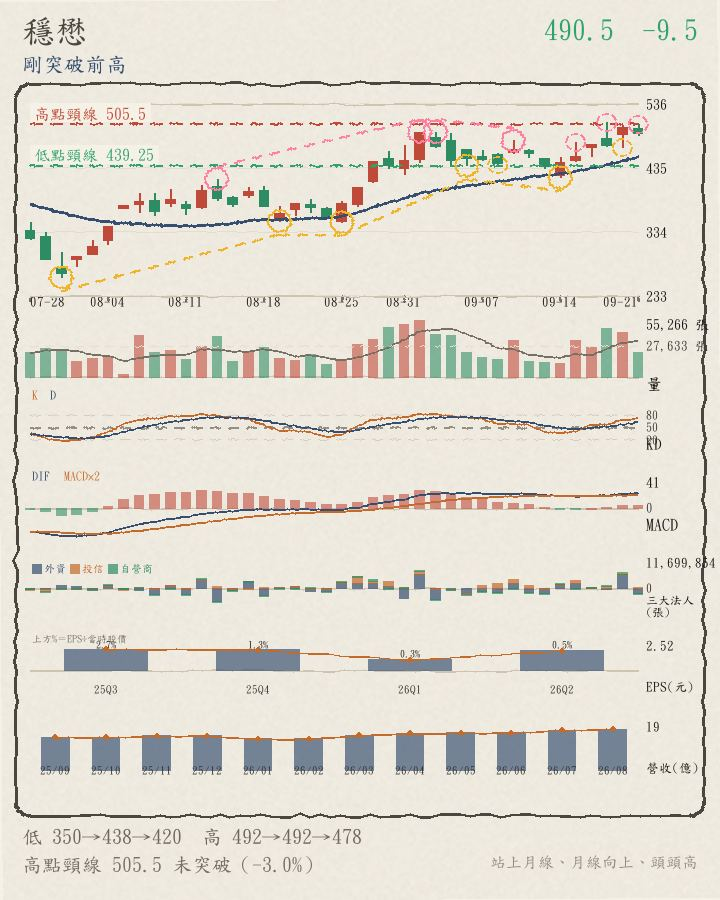
今天收黑、成交量也比平均少、站上月線 504.775，已站上高點頸線 487.33，高點還在墊高（但底部沒同步墊高）。
- 月線位置：收盤 588 在月線 504.775 之上；5 日線 584.8 也在月線之上（短均在上）；月線向上、5 日線向上
- 量能：成交量是 20 日均量的 0.82 倍，比 20 日均量少很多
- 關鍵價位：高點頸線 487.33 已站上；最近轉折高點 478（高於 23.0%）；最近轉折低點 482（高於 22.0%）
- 轉折結構：高點 492、492、478 墊高 31.8%（頭頭高），但低點 438.5、420、482 沒有同步墊高；還沒確認的轉折低點 09-18 467、10-07 582；還沒確認的轉折高點 09-23 518、10-05 630（圖上虛線小圈）
上升趨勢（底底高＋頭頭高） 成交金額 112.67 億・全榜第 33 名（上櫃第 7 名）
好條件 6/8：站上月線、月線向上、底底高、頭頭高、突破頸線、外資買超
不好條件 3/8：今日下跌、相對大盤弱、量增下跌（出貨）

今天帶量收黑、站上月線 186.125，已站上高點頸線 142.25，轉折結構仍是底底高＋頭頭高。
- 月線位置：收盤 249 在月線 186.125 之上；5 日線 229.9 也在月線之上（短均在上）；月線向上、5 日線向上
- 量能：成交量是 20 日均量的 2.74 倍，比 20 日均量大不少；收黑卻量增，量價背離
- 關鍵價位：高點頸線 142.25 已站上；最近轉折高點 201（高於 23.9%）；最近轉折低點 172.5（高於 44.3%）
- 轉折結構：低點 77.9、123.5、172.5 一路墊高 121.4%、高點 140.5、144、201 也一路墊高 43.1%，是底底高＋頭頭高；還沒確認的轉折低點 09-24 175；還沒確認的轉折高點 09-21 190、10-07 280.5（圖上虛線小圈）
底部墊高、突破前高 成交金額 110.16 億・全榜第 34 名（上櫃第 8 名）
好條件 4/8：站上月線、月線向上、底底高、頭頭高
不好條件 4/8：今日下跌、相對大盤弱、量增下跌（出貨）、外資賣超
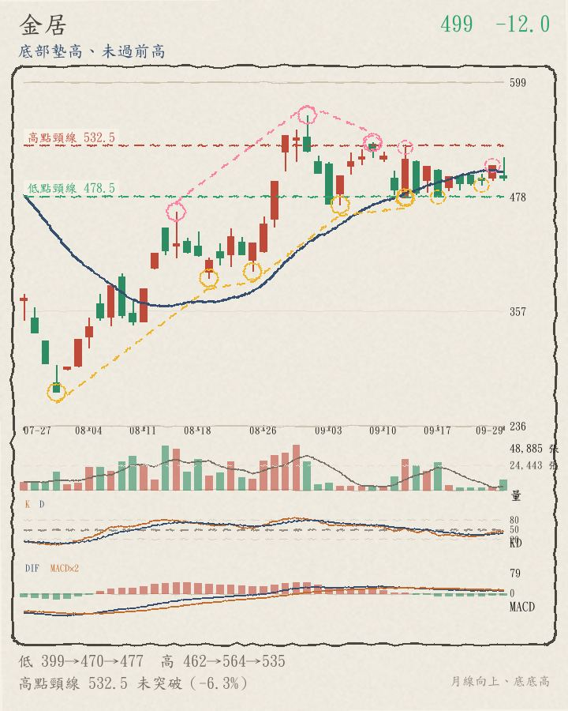
今天帶量收黑、站上月線 510.9，離高點頸線 571 還差 3.9%，轉折結構仍是底底高＋頭頭高。
- 月線位置：收盤 549 在月線 510.9 之上；5 日線 538.8 也在月線之上（短均在上）；月線向上、5 日線向上
- 量能：成交量是 20 日均量的 1.53 倍，比 20 日均量大不少；收黑卻量增，量價背離
- 關鍵價位：高點頸線 571 還沒突破，差 3.9%；最近轉折高點 535（高於 2.6%）；最近轉折低點 477（高於 15.1%）
- 轉折結構：低點 399、469.5、477 一路墊高 19.5%、高點 462、564、535 也一路墊高 8.0%，是底底高＋頭頭高；還沒確認的轉折低點 09-30 495、10-07 530；還沒確認的轉折高點 09-29 519、10-06 578（圖上虛線小圈）
高點墊高、底部不穩 成交金額 92.46 億・全榜第 36 名（上櫃第 9 名）
好條件 5/8：站上月線、月線向上、頭頭高、相對大盤強、外資買超
不好條件 0/8：無
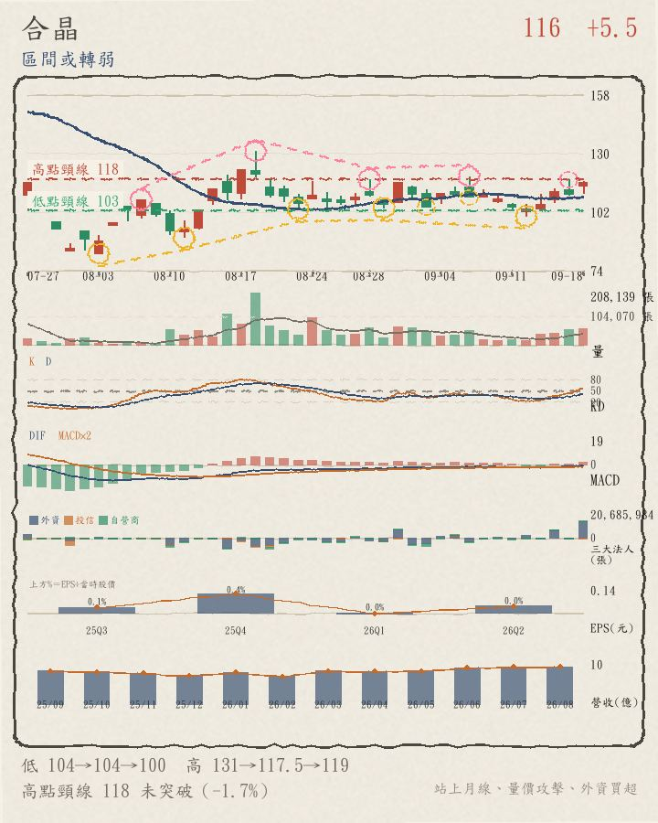
今天收紅、站上月線 118.175，離高點頸線 138.5 還差 2.5%，高點還在墊高（但底部沒同步墊高）。
- 月線位置：收盤 135 在月線 118.175 之上；5 日線 131.9 也在月線之上（短均在上）；月線向上、5 日線向上
- 量能：成交量是 20 日均量的 0.98 倍，跟 20 日均量差不多
- 關鍵價位：高點頸線 138.5 還沒突破，差 2.5%；最近轉折高點 140（低於 3.6%）；最近轉折低點 100（高於 35.0%）
- 轉折結構：高點 119、125、140 墊高 17.6%（頭頭高），但低點 103.5、104、100 沒有同步墊高；還沒確認的轉折低點 09-24 114.5、10-06 126.5；還沒確認的轉折高點 10-05 140、10-07 135.5（圖上虛線小圈）
區間或轉弱 成交金額 69.84 億・全榜第 45 名（上櫃第 10 名）
好條件 3/8：站上月線、相對大盤強、量價攻擊（收紅＋大量）
不好條件 2/8：外資賣超、月線下彎
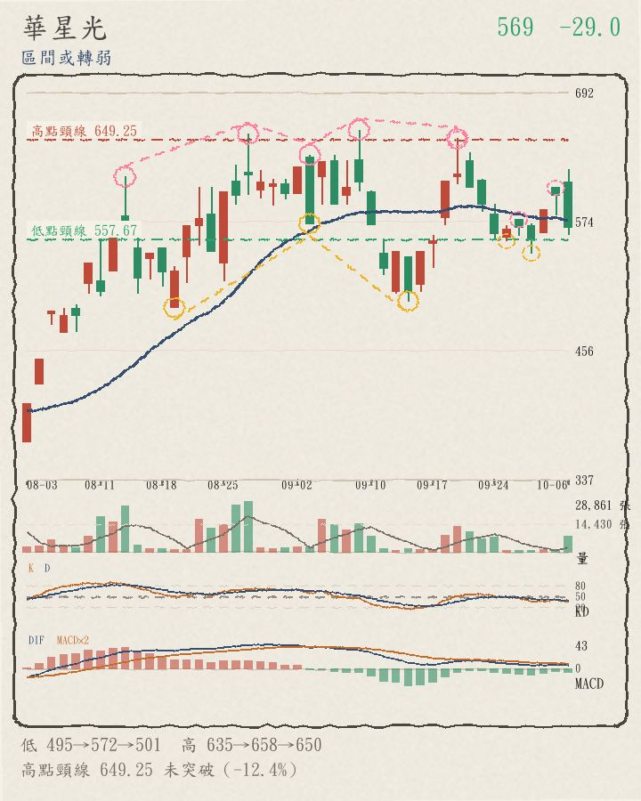
今天帶量收紅、站上月線 574.3，離高點頸線 649.25 還差 10.8%，轉折還沒走出明顯方向。
- 月線位置：收盤 579 在月線 574.3 之上；5 日線 577.4 也在月線之上（短均在上）；月線走平或向下、5 日線走平或向下
- 量能：成交量是 20 日均量的 1.93 倍，比 20 日均量大不少；收紅又量增，量價配合
- 關鍵價位：高點頸線 649.25 還沒突破，差 10.8%；最近轉折高點 650（低於 10.9%）；最近轉折低點 545（高於 6.2%）
- 轉折結構：低點 572、501、545 與高點 635、658、650 都沒有明顯遞增，屬於區間震盪或轉弱；還沒確認的轉折低點 09-29 556、10-06 561；還沒確認的轉折高點 09-30 576、10-06 622（圖上虛線小圈）
高點墊高、底部不穩 成交金額 66.24 億・全榜第 49 名（上櫃第 11 名）
好條件 3/8：月線向上、頭頭高、外資買超
不好條件 5/8：今日下跌、相對大盤弱、在月線之下、量增下跌（出貨）、收盤跌破前一日低點

今天帶量收黑、跌破月線 18942.2，離高點頸線 19845 還差 10.6%，高點還在墊高（但底部沒同步墊高）。
- 月線位置：收盤 17750 在月線 18942.2 之下；5 日線 18827 也在月線之下（短均在下）；月線向上、5 日線走平或向下
- 量能：成交量是 20 日均量的 2.14 倍，比 20 日均量大不少；收黑卻量增，量價背離
- 關鍵價位：高點頸線 19845 還沒突破，差 10.6%；最近轉折高點 21800（低於 18.6%）；最近轉折低點 17170（高於 3.4%）
- 轉折結構：高點 18600、19795、21800 墊高 17.2%（頭頭高），但低點 15930、14600、17170 沒有同步墊高；還沒確認的轉折低點 10-02 18355、10-07 17655；還沒確認的轉折高點 10-06 19895（圖上虛線小圈）
高點墊高、底部不穩 成交金額 64.69 億・全榜第 52 名（上櫃第 12 名）
好條件 6/8：站上月線、月線向上、頭頭高、相對大盤強、外資買超、量價攻擊（收紅＋大量）
不好條件 0/8：無
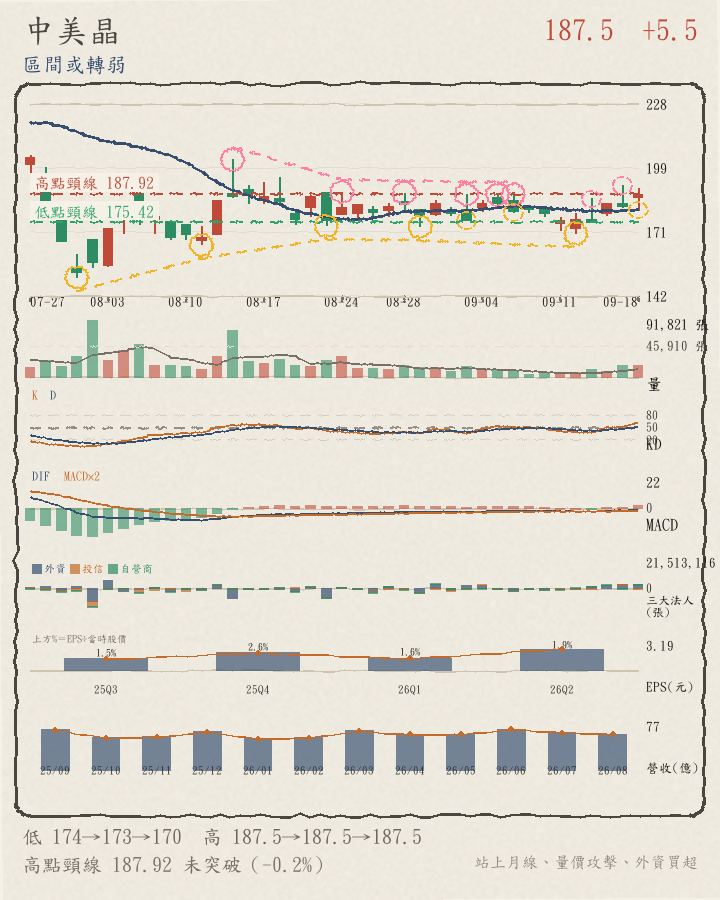
今天帶量收紅、站上月線 192.95，離高點頸線 228.25 還差 1.9%，高點還在墊高（但底部沒同步墊高）。
- 月線位置：收盤 224 在月線 192.95 之上；5 日線 217.3 也在月線之上（短均在上）；月線向上、5 日線向上
- 量能：成交量是 20 日均量的 1.45 倍，比 20 日均量大不少；收紅又量增，量價配合
- 關鍵價位：高點頸線 228.25 還沒突破，差 1.9%；最近轉折高點 229.5（低於 2.4%）；最近轉折低點 181.5（高於 23.4%）
- 轉折結構：高點 187.5、202、229.5 墊高 22.4%（頭頭高），但低點 173、170、181.5 沒有同步墊高；還沒確認的轉折低點 09-18 180.5、10-06 211；還沒確認的轉折高點 10-07 227（圖上虛線小圈）
底部墊高、突破前高 成交金額 46.84 億・全榜第 63 名（上櫃第 13 名）
好條件 8/8：站上月線、月線向上、底底高、頭頭高、突破頸線、相對大盤強、外資買超、量價攻擊（收紅＋大量）
不好條件 0/8：無
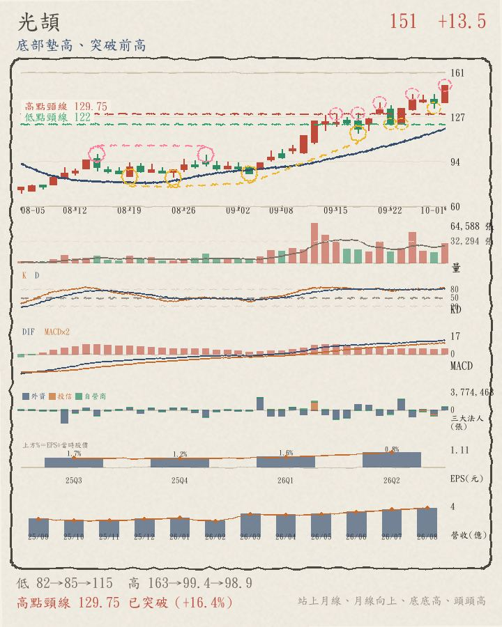
今天帶量收紅、站上月線 130.405，已站上高點頸線 158.5，轉折結構仍是底底高＋頭頭高。
- 月線位置：收盤 159.5 在月線 130.405 之上；5 日線 149.9 也在月線之上（短均在上）；月線向上、5 日線向上
- 量能：成交量是 20 日均量的 1.10 倍，比 20 日均量大一些；收紅又量增，量價配合
- 關鍵價位：高點頸線 158.5 已站上；最近轉折高點 98.9（高於 61.3%）；最近轉折低點 115（高於 38.7%）
- 轉折結構：低點 81.8、84.8、115 一路墊高 40.6%、高點 163、99.4、98.9 也一路墊高 61.3%，是底底高＋頭頭高；還沒確認的轉折低點 09-30 134、10-06 144；還沒確認的轉折高點 10-02 157.5、10-07 159.5（圖上虛線小圈）
剛突破前高 成交金額 44.32 億・全榜第 64 名（上櫃第 14 名）
好條件 6/8：站上月線、月線向上、頭頭高、相對大盤強、外資買超、量價攻擊（收紅＋大量）
不好條件 0/8：無

今天帶量收紅、站上月線 476.775，離高點頸線 553 還差 6.3%，高點還在墊高（但底部沒同步墊高）。
- 月線位置：收盤 518 在月線 476.775 之上；5 日線 513.3 也在月線之上（短均在上）；月線向上、5 日線向上
- 量能：成交量是 20 日均量的 2.05 倍，比 20 日均量大不少；收紅又量增，量價配合
- 關鍵價位：高點頸線 553 還沒突破，差 6.3%；最近轉折高點 508（高於 2.0%）；最近轉折低點 436（高於 18.8%）
- 轉折結構：高點 560、520、508 墊高 8.7%（頭頭高），但低點 418.5、417、436 沒有同步墊高；還沒確認的轉折低點 10-06 503；還沒確認的轉折高點 10-05 547、10-07 552（圖上虛線小圈）
區間或轉弱 成交金額 43.94 億・全榜第 65 名（上櫃第 15 名）
好條件 3/8：站上月線、月線向上、外資買超
不好條件 2/8：今日下跌、相對大盤弱
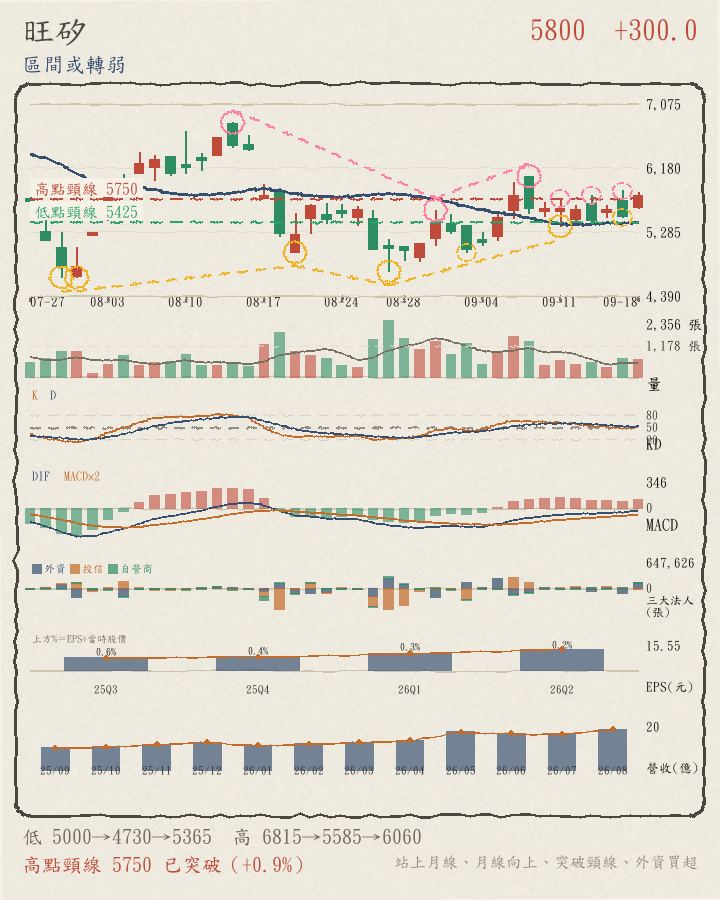
今天收黑、站上月線 5491.5，離高點頸線 5844 還差 5.4%，轉折還沒走出明顯方向。
- 月線位置：收盤 5530 在月線 5491.5 之上；5 日線 5412 也在月線之下（短均在下）；月線向上、5 日線向上
- 量能：成交量是 20 日均量的 0.98 倍，跟 20 日均量差不多
- 關鍵價位：高點頸線 5844 還沒突破，差 5.4%；最近轉折高點 5860（低於 5.6%）；最近轉折低點 4995（高於 10.7%）
- 轉折結構：低點 5365、5090、4995 與高點 5585、6060、5860 都沒有明顯遞增，屬於區間震盪或轉弱；還沒確認的轉折高點 10-06 5725、10-07 5725（圖上虛線小圈）
底部墊高、突破前高 成交金額 39.57 億・全榜第 66 名（上櫃第 16 名）
好條件 7/8：站上月線、月線向上、底底高、頭頭高、突破頸線、相對大盤強、外資買超
不好條件 0/8：無
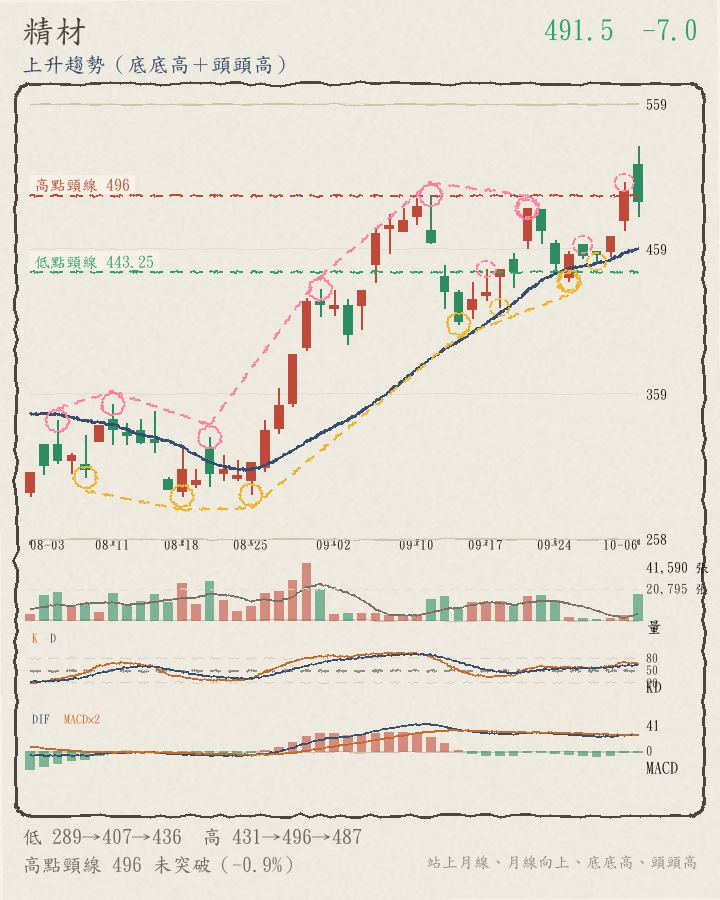
今天收紅、但成交量比平均少、站上月線 460.375，已站上高點頸線 491.5，轉折結構仍是底底高＋頭頭高。
- 月線位置：收盤 497 在月線 460.375 之上；5 日線 481.3 也在月線之上（短均在上）；月線向上、5 日線向上
- 量能：成交量是 20 日均量的 0.91 倍，比 20 日均量少一些；收紅但量縮，量價背離
- 關鍵價位：高點頸線 491.5 已站上；最近轉折高點 487（高於 2.1%）；最近轉折低點 436.5（高於 13.9%）
- 轉折結構：低點 289、407、436.5 一路墊高 51.0%、高點 431、496、487 也一路墊高 8.8%，是底底高＋頭頭高；還沒確認的轉折低點 10-01 450、10-07 475.5；還沒確認的轉折高點 09-30 462、10-06 530（圖上虛線小圈）
高點墊高、底部不穩 成交金額 39.54 億・全榜第 67 名（上櫃第 17 名）
好條件 4/8：站上月線、月線向上、頭頭高、外資買超
不好條件 2/8：今日下跌、相對大盤弱
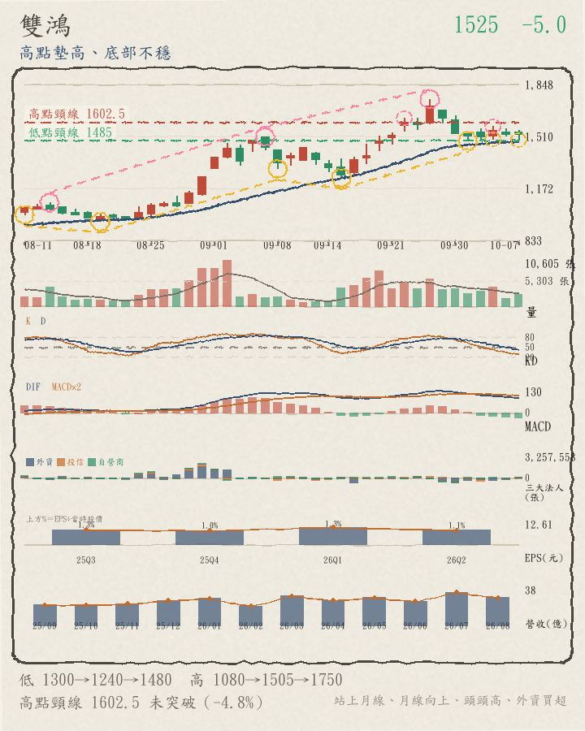
今天收黑、成交量也比平均少、站上月線 1476.75，離高點頸線 1602.5 還差 4.8%，高點還在墊高（但底部沒同步墊高）。
- 月線位置：收盤 1525 在月線 1476.75 之上；5 日線 1527 也在月線之上（短均在上）；月線向上、5 日線走平或向下
- 量能：成交量是 20 日均量的 0.76 倍，比 20 日均量少很多
- 關鍵價位：高點頸線 1602.5 還沒突破，差 4.8%；最近轉折高點 1750（低於 12.9%）；最近轉折低點 1480（高於 3.0%）
- 轉折結構：高點 1080、1505、1750 墊高 62.0%（頭頭高），但低點 1300、1240、1480 沒有同步墊高；還沒確認的轉折低點 10-05 1490、10-07 1485；還沒確認的轉折高點 09-22 1630、10-05 1575（圖上虛線小圈）
剛突破前高 成交金額 35.17 億・全榜第 68 名（上櫃第 18 名）
好條件 6/8：站上月線、月線向上、頭頭高、突破頸線、相對大盤強、外資買超
不好條件 1/8：量增下跌（出貨）

今天收黑、站上月線 1301.25，已站上高點頸線 1436.67，高點還在墊高（但底部沒同步墊高）。
- 月線位置：收盤 1535 在月線 1301.25 之上；5 日線 1438 也在月線之上（短均在上）；月線向上、5 日線向上
- 量能：成交量是 20 日均量的 1.04 倍，跟 20 日均量差不多
- 關鍵價位：高點頸線 1436.67 已站上；最近轉折高點 1270（高於 20.9%）；最近轉折低點 1180（高於 30.1%）
- 轉折結構：高點 1455、1435、1270 墊高 25.2%（頭頭高），但低點 1185、1180、1180 沒有同步墊高；還沒確認的轉折低點 09-21 1200、10-01 1260；還沒確認的轉折高點 09-30 1420、10-06 1590（圖上虛線小圈）
高點墊高、底部不穩 成交金額 34.86 億・全榜第 69 名（上櫃第 19 名）
好條件 5/8：站上月線、月線向上、頭頭高、突破頸線、外資買超
不好條件 3/8：今日下跌、相對大盤弱、量增下跌（出貨）

今天收黑、站上月線 171.025，已站上高點頸線 185，高點還在墊高（但底部沒同步墊高）。
- 月線位置：收盤 190 在月線 171.025 之上；5 日線 187.3 也在月線之上（短均在上）；月線向上、5 日線向上
- 量能：成交量是 20 日均量的 1.01 倍，跟 20 日均量差不多
- 關鍵價位：高點頸線 185 已站上；最近轉折高點 163（高於 16.6%）；最近轉折低點 152.5（高於 24.6%）
- 轉折結構：高點 157、158、163 墊高 3.8%（頭頭高），但低點 146.5、147、152.5 沒有同步墊高；還沒確認的轉折低點 09-24 168、10-01 178.5；還沒確認的轉折高點 10-01 188.5、10-06 195（圖上虛線小圈）
區間或轉弱 成交金額 34.56 億・全榜第 70 名（上櫃第 20 名）
好條件 5/8：站上月線、月線向上、相對大盤強、外資買超、量價攻擊（收紅＋大量）
不好條件 0/8：無

今天帶量收紅、站上月線 228.15，離高點頸線 260.33 還差 2.4%，轉折還沒走出明顯方向。
- 月線位置：收盤 254 在月線 228.15 之上；5 日線 229.7 也在月線之上（短均在上）；月線向上、5 日線向上
- 量能：成交量是 20 日均量的 2.82 倍，比 20 日均量大不少；收紅又量增，量價配合
- 關鍵價位：高點頸線 260.33 還沒突破，差 2.4%；最近轉折高點 262（低於 3.1%）；最近轉折低點 204（高於 24.5%）
- 轉折結構：低點 199、218、204 與高點 241.5、265、262 都沒有明顯遞增，屬於區間震盪或轉弱；還沒確認的轉折低點 09-29 205、10-06 225；還沒確認的轉折高點 10-05 242、10-07 254（圖上虛線小圈）